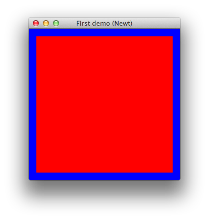
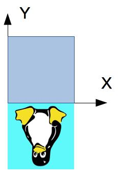

FirstStepSwing.javaについて、以下のように、GLCanvasの代わりにGLJPanelを使っても、同様に真っ暗なスクリーンになります。
この文書は,JOGLを用いたOpenGLのチュートリアルです。日本のOpenGL界隈では有名な、和歌山大学の床井先生の「OpenGL による「手抜き」OpenGL入門」を基にしています。末尾の条件に従い自由に再配布・改変してくださっても構いません。
なお、この文書の公開を快諾してくださった床井先生に感謝いたします。
初版 2015/11/12
更新 2015/11/12
この文書では、Javaの基本は理解されている読者が、JOGLを使いたい場合に参考にしていただくことを目的として描かれています。また、C, C++などの言語でOpenGLを使った経験はあるが、JOGLを使いたい方にも参考となることを目指しています。
筆者は主にOSX(Marvericks)を用いて動作確認しています。
床井先生の「OpenGL手抜き入門」には、以下のような一文があります。
OpenGLとGLUTを組み合わせれば、 (1)UNIX系OS(Linux、FreeBSD等を含む)とWindowsとMacのいずれでも動く、
(2)リアルタイムに三次元表示を行うプログラムが、
(3)とっても簡単に書けてしまう、
という三拍子そろったメリットが得られます。
これについては、"Write once、run anywhere"がウリのJavaであり、JOGLももちろん複数のプラットフォームで使えるようになっています。
プラットフォームとしては、Windows/OSX/Unix系だけでなく、Android用のサンプルがAPKファイルの形で提供されていることから、Androidを採用したスマホやタブレットでも使えるようです。なお、iPhone/iPadについては、現時点では不明です。
現時点では、Java系ではProcessing、LWJGLがOpenGLをサポートしています。libGDXはOpenGL ESをサポートしています。
Javaで、OpenGL系列ではない技術となると、１０年ほど前ならJava3Dが唯一の選択肢だったと思います。Java 8からは、JavaFX 3Dが登場しています。
JavaFXとJOGLの組み合わせが動かせないか、疑問に思われる方もいらっしゃると思いますが、「動くはず」という情報だけは見つかりました。動作確認は行っていません。
JavaのUIはAWT、Swing、SWTがあり、JOGLはいずれにも対応しています。JOGLはこれとは別にNEWTと呼ばれる独自のライブラリが用意されています。但し、NEWTはSwingのJFrameやAWTのWindowとは違い、ボタンやテキストフィールドなどを貼り付けるような使い方は想定されていないようです。
この文書で解説するのは、主にNEWTとします。
この文書では、OpenGLの固定パイプライン機能を対象としています。残念ながら、最近のOpenGLで使われるGLSLについては対象外です。
(1)Mavenを使う方法
JOGLはMavenセントラル・リポジトリに登録されているので、以下の内容("*"は具体的な数字で置き換えます)をpom.xmlに書いておけば、"mvn install"によりダウンロードされます。
JavaDocをダウンロードしたい場合、"mvn dependency:resolve -Dclassifier=javadoc"、Javaソースをダウンロードしたい場合、"mvn dependency:resolve -Dclassifier=sources"とします。
org.jogamp.jogl
jogl-all-main
2.*.*
(2)コンパイル済みバイナリの入手
JOGLのコンパイル済みのバイナリはhttp://jogamp.org/から入手できます。Windows用、Linux用、OSX用がすべて一つの圧縮ファイルとして提供されています。
なお、検索エンジンで探すとhttps://kenai.com/projects/jogl/pages/Homeが見つかることがありますが、これは古いです。
先のページの下の、Builds/Downloadsの"Current"の右にある"zip"クリックした先のページにある、jogamp-all-platforms.7zに、必要となる全てのJARファイルが含まれています。
7z形式のアーカイブファイルを解凍できるソフトが必要となります。Windowsでは7-zip、OSXではEz7z、Unix系ではP7ZIPが使えるようです。
余談ですが、前述の圧縮ファイルには、JOCL(OpenCL関係)、JOAL(サウンド関係)などのJARファイルも同梱されています。
これらを適切なフォルダ、あるいはディレクトリに格納してください。なお、このときにディレクトリの構造は解凍した状態から変えないようにします。
(3)パッケージ管理ツールを使う方法
Ubuntuではlibjogl2-javaというパッケージにより提供されています。Debianでも同様と思われます。RedHat系では未確認です。
OSXでは、HomeBrewには無いことを確認しました。MacPortsでは未確認です。
(4)ソースからのコンパイル
この文書では対象外としますが、http://jogamp.org/jogl/doc/HowToBuild.htmlに方法が書かれています。
(5)JavaDocおよびJavaソースコードの入手
mavenを使う場合(1)項を、それ以外の場合、リファレンスを見てください。
バージョン2.3より、JOGL関連クラスのパッケージ名が以下のとおり変わったようです。従って、既存のソースを、2.3以降でコンパイルする場合には、以下のように修正する必要があります。
| javax.media.opengl.* | → | com.jogamp.opengl.* |
| javax.media.nativewindow.* | → | com.jogamp.nativewindow.* |
なお、Unix系のOS(OSXも含む)では以下のスクリプトにより、サブフォルダー内のソースを一括して変えられるはずです。Windowsでの方法は未調査です、すいません。
注意：このスクリプトのバグによりソースが失われる可能性もありますので、きちんとバックアップを取ってから実行してください。
このスクリプトの、'-i ".bak"'というパラメーターにより、"*.java.bak"というファイル名でバックアップを作成しますが、バックアップが不要なら削除してください。
grep -lr 'javax\.media\.opengl' --include="*.java" * | xargs sed -i ".bak" -e 's/javax\.media\.opengl/com\.jogamp\.opengl/g'
jogl-all.jarとgluegen-rt.jarの２つのファイルを、クラスパスに設定します。
jogl-all.jarは、全てのクラスファイルを含むので、これさえ使っていれば必要なクラスが見つからないといったことにはならないのですが、各プラットフォームや、使いたいUI(AWT、Swing、NEWT)に応じて別のJARファイルも用意されているので、これらを使えば、プロジェクト全体を配布する場合に、ファイルサイズが小さくなる可能性があります。
また、実行時にはプラットフォーム依存のネイティブ・ライブラリも必要となるのですが、JOGLには実行環境を調査して、必要なネイティブ・ライブラリを自動的にロードする仕組みが備わっているので、先ほどのJARファイルをクラスパスに設定しておけば、環境変数PATHや、LD_LIBRARY_PATH、Eclipseでのネイティブ・ライブラリの場所などを設定する必要はありません。 この仕組みは、ディレクトリ構成がアーカイブファイルを解凍したときのままであることが前提条件のようですので、アーカイブファイルを解凍したらディレクトリ構成を変えないようにします。
また、JDK/JREのextフォルダーにJOGL,GLUEGENのJARファイルを置くのは厳禁です。
いよいよプログラムの作成に入ります。ウィンドウを開くだけのプログラムは、JOGL+NEWTを使うとこんな風になります。このソースプログラムをFirstStepNewt.javaというファイル名で作成し、実行してみてください。
package demos.basic;
import com.jogamp.opengl.GL;
import com.jogamp.opengl.GLAutoDrawable;
import com.jogamp.opengl.GLCapabilities;
import com.jogamp.opengl.GLEventListener;
import com.jogamp.opengl.GLProfile;
import com.jogamp.newt.event.WindowAdapter;
import com.jogamp.newt.event.WindowEvent;
import com.jogamp.newt.opengl.GLWindow;
import com.jogamp.opengl.util.Animator;
public class FirstStepNewt implements GLEventListener { //(1)
public static void main(String[] args) {
new FirstStepNewt();
}
public FirstStepNewt() {
GLCapabilities caps = new GLCapabilities(GLProfile.get(GLProfile.GL2));//(2)
GLWindow glWindow = GLWindow.create(caps); //(3)
glWindow.setTitle("First demo (Newt)"); //(4)
glWindow.setSize(300, 300); //(5)
glWindow.addWindowListener(new WindowAdapter() { //(6)
@Override
public void windowDestroyed(WindowEvent evt) {
System.exit(0);
}
});
glWindow.addGLEventListener(this); //(7)
Animator animator = new Animator(); //(8)
animator.add(glWindow);
animator.start();
glWindow.setVisible(true); //(10)
}
@Override
public void init(GLAutoDrawable drawable) {}
@Override
public void reshape(GLAutoDrawable drawable, int x, int y, int width, int height) {}
@Override
public void display(GLAutoDrawable drawable) {}
@Override
public void dispose(GLAutoDrawable drawable) {
if(animator != null) animator.stop();
}
}
以下のような真っ黒なウィンドウが表示されます。
今度は、同じことをSwingを使ってやってみます。
このソースプログラムをFirstStepSwing.javaというファイル名で作成し、実行してみてください。
package demos.basic;
import java.awt.BorderLayout;
import java.awt.Dimension;
import java.awt.event.WindowAdapter;
import java.awt.event.WindowEvent;
import com.jogamp.opengl.GL;
import com.jogamp.opengl.GLAutoDrawable;
import com.jogamp.opengl.GLCapabilities;
import com.jogamp.opengl.GLEventListener;
import com.jogamp.opengl.GLProfile;
import com.jogamp.opengl.awt.GLCanvas;
import javax.swing.JFrame;
import javax.swing.SwingUtilities;
public class FirstStepSwing implements GLEventListener { //(1)
public static void main(String[] args) {
SwingUtilities.invokeLater(new Runnable() {
@Override
public void run() {
new FirstStepSwing();
}
});
}
public FirstStepSwing() {
GLCapabilities caps = new GLCapabilities(GLProfile.get(GLProfile.GL2)); //(2)
JFrame frame = new JFrame(); //(3)
frame.setTitle("First demo (Swing)"); //(4)
frame.addWindowListener(new WindowAdapter() { //(6)
@Override
public void windowClosing(WindowEvent e) {
System.exit(0);
}
});
GLCanvas canvas = new GLCanvas(caps);
canvas.setPreferredSize(new Dimension(300, 300)); //(5)
canvas.addGLEventListener(this); //(7)
frame.add(canvas, BorderLayout.CENTER);
frame.setLocation(300, 300); //(9)
frame.pack();
frame.setVisible(true); //(10)
}
@Override
public void init(GLAutoDrawable drawable) {}
@Override
public void reshape(GLAutoDrawable drawable, int x, int y, int width, int height) {}
@Override
public void display(GLAutoDrawable drawable) {}
@Override
public void dispose(GLAutoDrawable drawable) {
if(animator != null) animator.stop();
}
}
これも同じように以下のような真っ黒なウィンドウが表示されます。
FirstStepSwing.javaについて、以下のように、GLCanvasの代わりにGLJPanelを使っても、同様に真っ暗なスクリーンになります。
import com.jogamp.opengl.awt.GLJPanel;
//GLCanvas canvas = new GLCanvas(caps); コメントアウト
GLJPanel canvas = new GLJPanel(caps);
GLCanvas、GLJPanelの使い分けは、jogampフォーラムによると、特に問題ない限りGLCanvasを使い(こちらの方が高速)、以下のような状況で何かトラブルが起きた場合はGLJPanelを使おうということのようです。
この文書では、GLCanvasを使うことにします。
ソースコードについて順を追って解説していきます。まず、FirstStepNewt.java、FirstStepSwing.javaのどちらにも、(1)の行にGLEventListenerというインターフェースが書かれています。これは以下のようなシグネチャとなっています。JOGLを使うプログラマはこれを実装することにより、JOGLのパワーを引き出すことが出来るという訳です。
なお、C言語上のGLUTでは、
int main(int argc, char *argv[]) {
glutInit(&argc, argv);
glutCreateWindow(argv[0]);
glutDisplayFunc(display);
glutMainLoop();
return 0;
}
の"glutDisplayFunc(display);"のように、関数名はプログラマが自分で決めて使いますが、JOGLの場合、メソッド名は以下のように定義されているものを使うことになります。
public void init(GLAutoDrawable drawable);
public void reshape(GLAutoDrawable drawable、int x,int y, int width, int height);
public void display(GLAutoDrawable drawable);
public void dispose(GLAutoDrawable drawable);
いずれのメソッドでも、引数に、GLAutoDrawableクラスのインスタンスであるdrawableが渡されています。これについては3.4節で説明します。
init()は、OpenGLコンテキストの起動時に呼ばれますので、プログラマはここで一度しか行う必要のない初期化処理を記述します。注意すべきことは、下位のOpenGLコンテキストが破棄・再生成された場合にも呼ばれるため、２回以上呼ばれることがあるということです。(筆者も一度だけ経験したことがあり、一度だけしか呼ばれないはずと不思議に思っていましたが、今回の執筆にあたりJavadocを再確認したところ、このように書かれていましたので、納得しました)
dispose()は、OpenGLコンテキストが破棄された時に呼ばれますので、プログラマはここでリソースの解放などの処理を行います。こちらもinit()と同様、OpenGLコンテキストが破棄された場合に呼ばれますので、２回以上呼ばれることがあります。
reshape()は、アプリのウィンドウサイズが変更された場合に呼ばれます。プログラマは、必要に応じて、後述のビューポートや視錐台を更新します。
display()は、最も頻繁に呼ばれるメソッドです。プログラマは、ここで各種のプリミティブ(後述)に色を付けて描画したりします。ゲームなどの動きのあるアプリケーションでは、スクリーン上に見えるキャラクターが滑らかに移動しているように見せかけるため、適切に処理する必要があります。
次に(2)の
GLCapabilities caps = new GLCapabilities(GLProfile.get(GLProfile.GL2)); //(2)
については14章で解説します。
(3)から(6)についてまとめて説明します。NEWT版は
GLWindow glWindow = GLWindow.create(caps); //(3)
glWindow.setTitle("First demo (Newt)"); //(4)
glWindow.setSize(300、300); //(5)
glWindow.addWindowListener(new WindowAdapter() { //(6)
@Override
public void windowDestroyed(WindowEvent evt) {
System.exit(0);
}
});
glWindow.addGLEventListener(this); //(7)
Animator animator = new Animator(); //(8)
animator.add(glWindow);
animator.start();
glWindow.setPosition(500, 500); //(9)
glWindow.setVisible(true); //(10)
のとおり、Swing版は、
JFrame frame = new JFrame(); //(3)
frame.setTitle("First demo (Swing)"); //(4)
frame.addWindowListener(new WindowAdapter() { //(6)
@Override
public void windowClosing(WindowEvent e) {
System.exit(0);
}
});
GLCanvas canvas = new GLCanvas(caps);
canvas.setPreferredSize(new Dimension(300, 300)); //(5)
canvas.addGLEventListener(this); //(7)
frame.add(canvas、BorderLayout.CENTER);
frame.setLocation(500, 500); //(9)
frame.pack();
frame.setVisible(true);//(10)
となっています。NEWT版では、Swing版とほぼ一対一に対応していることがわかると思います。NEWT版とSwing版を比較してみると、NEWT版ではGLWindowがSwing版のJFrameとGLCanvasを兼ねたような役割を果たしていることがわかります。
Swingについては他にも良い解説がたくさんありますので、説明は割愛して、NEWTで使われるGLWindowクラスについて説明します。
(3)ではGLWindowのインスタンスを作成しています。(4)でタイトルバー上のタイトルを設定、(5)でウィンドウのサイズを設定、(6)でタイトルバー上のクローズアイコンをクリックした時にアプリケーションを終了するように定義しています。(9)でウィンドウの位置を設定し、(10)でウィンドウが見える状態に設定します。
(7)がJOGLアプリを作成する上で重要で、どのクラスがJOGLからのイベントを受け取るのかを定義しています。ここでは、FirstStepNewtクラスとFirstStepSwingクラス自身が処理するように定義しています。今のところ、これらのメソッドは何もしていないため、ウィンドウは真っ黒になるということです。
(8)はNEWT版だけにあります。(Animatorの解説は後で行います)
Animator animator = new Animator(); //(8)
animator.add(glWindow);
animator.start();
これがないとどうなるか、コメントアウトして試してみてください。ウィンドウが数秒間だけ表示され、すぐに終了することがわかります。
GLWindowについては、setAlwaysOnTop()で常に最前面に表示、setFullscreen(true)でフルスクリーンを設定できます。
この文書の冒頭で書いたとおり、NEWTはSwingのJFrameとは違い、ボタンやテキストフィールドなどを貼り付けるような使い方はできませんので、これらの要素を使いたいならJFrameを、そうでなければNEWTを採用するのも一つの方法です。もちろんコントロールなしでもJFrameを使うという選択もありだと思います。
以降ではSwing版の解説は割愛し、NEWT版についてだけ書くことにします。
今まではdisplay()メソッドの中に何も記述していなかったので、真っ黒なウィンドウが表示されていました。そこで、今度は開いたウィンドウを塗りつぶしてみます。
FirstStepNewt.javaに以下の太字のところを追加し、もう一度プログラムを実行してみてください。
import com.jogamp.opengl.GL;
import com.jogamp.opengl.GL2;
//(省略)
public class FirstStepNewt implements GLEventListener { //(1)
public static void main(String[] args) {
new FirstStepNewt();
}
public FirstStepNewt() {
//変更なし
}
@Override
public void init(GLAutoDrawable drawable) {
GL2 gl = drawable.getGL().getGL2();//追加
//ウィンドウを青く塗りつぶす
gl.glClearColor(0.0f, 0.0f, 1.0f, 1.0f);//追加
}
@Override
public void reshape(GLAutoDrawable drawable, int x, int y, int width, int height) {}
@Override
public void display(GLAutoDrawable drawable) {
GL2 gl = drawable.getGL().getGL2();//追加
gl.glClear(GL.GL_COLOR_BUFFER_BIT);//追加
}
@Override
public void dispose(GLAutoDrawable drawable) {}
}
これを実行すると、以下のようなウィンドウが表示されます。
まず、init()メソッドでは以下を行っています。これは、display()メソッドでも同じです。
GL2 gl = drawable.getGL().getGL2();
これらのメソッドでは、引数として、GLAutoDrawableクラスのインスタンスであるdrawableが渡されています。JOGLでは、init()メソッド、display()メソッドだけでなく、reshape()、dispose()でも、上記のようにしてGLのインスタンスを取得し、このインスタンスのメソッドを呼び出して必要な処理を行っていくことになります。
getGL().getGL2()のように呼び出しを連鎖しているのは、getGL()で得られるのはGLクラスのインスタンスであり、さらにgetGL2()を呼んで必要なGL2クラスのインスタンスを取得します。
OpenGLは、バージョンによって使える機能に違いがあり、JOGLではこの機能の相違を明確にするため、クラスを分けて定義しているようです。詳細は13章のProfileで説明します。
以下のクラスが定義されています。
なお、これ以外にも、OpenGLESの機能を反映したGL2ES2などのクラスがありますが、この文書での説明は割愛します。
init()メソッド内では、続いて以下のメソッドを呼びます。
gl.glClearColor(0.0f, 0.0f, 1.0f, 1.0f);
JOGLではこのメソッドの引数はfloat型ですので、"1.0"ではなく"1f"あるいは"1.0f"とする必要があります（"0.0"や"1.0"ではコンパイルエラーになります。"0"や"1"だけだと大丈夫です)
void glClearColor(float r, float g, float b, float a)display()内ではGL2インスタンスを取得した後、以下を行っています。
glClearColor()は、プログラムの実行中に背景色を変更することがなければ、最初に一度だけ設定すれば十分です。そこでこのような初期化処理は、init()内でまとめて行います。
gl.glClear(GL.GL_COLOR_BUFFER_BIT);
JOGLではGLクラスのスタティック変数としてこれらのマスク値が定義されているので、"GL.GL_COLOR_BUFFER_BIT"のように指定する必要があります。(先頭の"GL"の後の"."に注意)
GLクラスをstatic importすれば以下のように"GL"というプレフィックス無しで、GL_COLOR_BUFFER_BITを指定することも可能です。C言語などから移植する場合はこちらの方が便利でしょう。
import static com.jogamp.opengl.GL.*; //"*"とすると、GLクラスで定義されている全てのstatic定数がインポートされる
・
・
gl.glClearBuffer(GL_COLOR_BUFFER_BIT | GL_DEPTH_BUFFER_BIT | GL_STENCIL_BUFFER_BIT); //GLを省略可能
・
サンプルコードのようにmaskにGL.GL_COLOR_BUFFER_BITを指定したときは、カラーバッファだけが塗りつぶされます。デプスバッファをクリアするにはGL.GL_DEPTH_BUFFER_BITを、ステンシルバッファをクリアするにはGL.GL_STENCIL_BUFFER_BITを指定します。以下のように、これらを'|'でまとめて指定することもできます。
gl.glClearBuffer(GL.GL_COLOR_BUFFER_BIT | GL_DEPTH_BUFFER_BIT | GL_STENCIL_BUFFER_BIT);
glFlush()ウィンドウ内に線を引いてみます。プログラムを以下のように変更し、実行してください。
import static com.jogamp.opengl.GL2.*;//追加
public class FirstStepNewt implements GLEventListener { //(1)
public static void main(String[] args) {
new FirstStepNewt();
}
public FirstStepNewt() {
//変更なし
}
@Override
public void init(GLAutoDrawable drawable) {
//変更なし
}
@Override
public void reshape(GLAutoDrawable drawable, int x, int y, int width, int height) {}
@Override
public void display(GLAutoDrawable drawable) {
GL2 gl = drawable.getGL().getGL2();
gl.glClear(GL.GL_COLOR_BUFFER_BIT);
//以下を追加
gl.glBegin(GL_LINE_LOOP);
gl.glVertex2f(-0.9f,-0.9f);
gl.glVertex2f(0.9f, -0.9f);
gl.glVertex2f(0.9f, 0.9f);
gl.glVertex2f(-0.9f, 0.9f);
gl.glEnd();
//ここまでを追加
}
@Override
public void dispose(GLAutoDrawable drawable) {}
}
以下のようウィンドウが表示されます。白い線が追加されていますね。
voidglBegin(int mode)void glEnd()void glVertex2f(float x,float y)void glVertex2d(double x,double y)描かれる図形は、(-0.9、-0.9)と(0.9、0.9)の2点を対角線とする正方形です。これがウィンドウに対して「一回り小さく」描かれます.このウィンドウの大きさと図形の大きさの比率は、ウィンドウを拡大縮小しても変化しません。これはウィンドウのx軸とy軸の範囲が、ともに[-1、1]に固定されているからです。
glBegin()の引数modeに指定できる図形のタイプには以下のようなものがあります。詳しくはglBeginのリファレンスを参照してください。
GL_POINTSGL_LINESGL_LINE_STRIPGL_LINE_LOOPGL_TRIANGLES/GL_QUADSGL_TRIANGLE_STRIP/GL_QUAD_STRIPGL_TRIANGLE_FANGL_POLYGON
OpenGLを処理するハードウェアは、実際には三角形しか塗り潰すことができません(モノによっては四角形もできるものもあります)。このためGL_POLYGONの場合は、多角形を三角形に分割してから処理します。従って、もし描画速度が重要ならGL_TRIANGLE_STRIPやGL_TRIANGLE_FANを使うようプログラムを工夫してみてください。またGL_QUADSもGL_POLYGONより高速です。
これまでは単純な直線だけを描いてきましたが、さまざまな点や線を描画するにはどうしたらよいでしょうか。ここではまず実行結果を示して、それを描くにはどのようなプログラムにすればいいかを示すことにします。
これを表示するためのプログラムは、次のとおりです。
package demos.basic;
import com.jogamp.opengl.GL2;
import com.jogamp.opengl.GLAutoDrawable;
import com.jogamp.opengl.GLCapabilities;
import com.jogamp.opengl.GLEventListener;
import com.jogamp.opengl.GLProfile;
import com.jogamp.newt.event.WindowAdapter;
import com.jogamp.newt.event.WindowEvent;
import com.jogamp.newt.opengl.GLWindow;
import com.jogamp.opengl.util.FPSAnimator;
import static com.jogamp.opengl.GL2.*;
public class LineAndPointNewt1 implements GLEventListener {
public static void main(String[] args){
new LineAndPointNewt1();
}
private float[] colors;
private final short linePattern = 0b111100011001010; //破線のパターンを定義 (1)
public LineAndPointNewt1() {
initColors();
GLCapabilities caps = new GLCapabilities(GLProfile.get(GLProfile.GL2));
GLWindow glWindow = GLWindow.create(caps);
glWindow.setTitle("Line and point (Newt)");
glWindow.setSize(400, 300);
glWindow.addWindowListener(new WindowAdapter() {
@Override
public void windowDestroyed(WindowEvent evt) {
System.exit(0);
}
});
glWindow.addGLEventListener(this);
FPSAnimator animator = new FPSAnimator(60);
animator.add(glWindow);
animator.start();
glWindow.setVisible(true);
}
private void initColors() {
colors = new float[8];
for(int i = 0; i < 8; i++) {
colors[i] = 0.3f + (0.1f * i);
}
}
@Override
public void display(GLAutoDrawable drawable) {
final GL2 gl2 = drawable.getGL().getGL2();
gl2.glClear(GL_COLOR_BUFFER_BIT);
//大きさを変えて、点を描く。
for(int i = 0; i < 8; i++) {
gl2.glPointSize((i + 1) * 0.5f); //(2)
gl2.glColor3f(1.0f, 1.0f, 1.0f);
gl2.glBegin(GL_POINTS); //(3)
gl2.glVertex2f(-0.9f, (i-7)*(1.6f/7f) + 0.8f);
gl2.glEnd();
}
//灰色の濃度を変えて、点を描く。
for(int i = 0; i < 8; i++) {
gl2.glPointSize(2f);
gl2.glBegin(GL_POINTS);
gl2.glColor3f(colors[i], colors[i], colors[i]);
//-0.8から+0.8の範囲になるよう計算
gl2.glVertex2f(-0.8f, (i-7)*(1.6f/7f) + 0.8f);
gl2.glEnd();
}
//太さを変えて、線を描く。
for(int i = 1; i < 9; i++) {
gl2.glLineWidth(i * 0.5f); //(4)
gl2.glColor3f(1.0f, 1.0f, 1.0f);
gl2.glBegin(GL_LINES);
gl2.glVertex2f(-0.6f + i*0.05f, -0.8f);
gl2.glVertex2f(-0.6f + i*0.05f, +0.8f);
gl2.glEnd();
}
//灰色の濃度を変えて、線を描く。
gl2.glLineWidth(1f);
for(int i = 0; i < 8; i++) {
gl2.glColor3f(colors[i], colors[i], colors[i]);
gl2.glBegin(GL_LINES);
gl2.glVertex2f(-0.1f + i*0.05f, -0.8f);
gl2.glVertex2f(-0.1f + i*0.05f, +0.8f);
gl2.glEnd();
}
//破線の色と、破線のスケールを変えて、線を描く。
gl2.glEnable(GL_LINE_STIPPLE); //破線を描くことを設定 (5)
for(int i = 0; i < 8; i++) {
gl2.glLineStipple(i+1, linePattern); //(6)
gl2.glColor3f(colors[i], colors[i], colors[i]);
gl2.glBegin(GL_LINES);
gl2.glVertex2f(+0.4f + i*0.05f, -0.8f);
gl2.glVertex2f(+0.4f + i*0.05f, +0.8f);
gl2.glEnd();
}
gl2.glDisable(GL_LINE_STIPPLE);//破線を描く設定を解除 (7)
}
@Override
public void init(GLAutoDrawable drawable) {
GL2 gl2 = drawable.getGL().getGL2();
gl2.glClearColor(0.0f, 0.0f, 0.0f, 0.0f);
}
@Override
public void reshape(GLAutoDrawable drawable, int x, int y, int width, int height) { }
@Override
public void dispose(GLAutoDrawable drawable) {
if(animator != null) animator.stop();
}
}
プログラムについて解説します。(3)で、前項のGL_POINTSを使い、点を描画しますが、このときに(2)で指定した点の大きさが使われます。
void glPointSize(float size)java.nio.DoubleBuffer glGetBuf = com.jogamp.common.nio.Buffers.newDirectfloatBuffer(bufSize);
gl2.glGetFloatv(paramType, glGetBuf);
glGetBuf.rewind();
System.out.print(paramName + ":");
for(int i = 0; i < bufSize; i++) {
System.out.print(glGetBuf.get(i) + ", ");
}
System.out.println();
ここで、glGetFloatv()の引数のparamTypeはGLクラスで定義されているint型の定数です。glGetBufはjava.nio.DoubleBuffer型のインスタンスで、これに結果が格納されます。bufSizeは結果を格納するために必要な要素数であり、これが結果を格納するために必要な値より小さな場合、正常な結果が得られないようです。
点の大きさの場合、paramTypeはGL.GL_POINT_SIZEを、bufSizeは1を指定します。
paramTypeに指定できる値は、OpenGLの状態に応じた多数の定数があり、ここでは紹介しきれませんので、詳しくはglGet()関数のリファレンスで確認してください。
上ではglGetFloatv()を使いましたが、この場合glGetDoublev()でも正常な結果が得られました。他にも、以下のように型に応じたメソッドが用意されています。
なお、C/C++言語で用意されているglGetPointerv()は用意されていません。
void glGetBooleanv(int pname, java.nio.BooleanBuffer buf);
void glGetDoublev(int pname, java.nio.DoubleBuffer buf);
void glGetFloatv(int pname, java.nio.floatBuffer params);
void glGetIntegerv(int pname, java.nio.IntBuffer buf);
(4)について
void glLineWidth(float width)(5)について
void glEnable(int mode)(7)について
void glDisable(int mode)(1)と(6)について
void glLineStipple(int factor、short pattern)線に色を付けてみます。4.1節のサンプルプログラムを以下のように変更し、実行してください。プログラムを実行したら線は何色で表示されたでしょうか?
public class FirstStepNewt implements GLEventListener { //(1)
public static void main(String[] args) {
new FirstStepNewt();
}
public FirstStepNewt() {
//変更なし
}
@Override
public void init(GLAutoDrawable drawable) {
//変更なし
}
@Override
public void reshape(GLAutoDrawable drawable, int x, int y, int width, int height) {}
@Override
public void display(GLAutoDrawable drawable) {
GL2 gl = drawable.getGL().getGL2();
gl.glClear(GL.GL_COLOR_BUFFER_BIT);
gl.glColor3f(1.0f, 0.0f, 0.0f); //この行を追加。1.0f, 0.0fのように'f'を付けていることに注意。
gl.glBegin(GL_LINE_LOOP);
gl.glVertex2f(-0.9f,-0.9f);
gl.glVertex2f(0.9f, -0.9f);
gl.glVertex2f(0.9f, 0.9f);
gl.glVertex2f(-0.9f, 0.9f);
gl.glEnd();
}
@Override
public void dispose(GLAutoDrawable drawable) {
}
}
以下のように線が赤くなりました。
void glColor3f(float r, float g, float b)| メソッド名と引数 | 値の範囲 | 備考 |
|---|---|---|
| glColor3f(float r, float g, float b) | 0から1.0まで | |
| glColor3d(double r, double g, double b) | 0から1.0まで | |
| glColor3b(byte r, byte g, byte b) | 0からByte.MAX_VALUE(127)まで | 負の値は0と見なされる |
| glColor3s(short r, short g, short b) | 0からShort.MAX_VALUE(32767)まで | 負の値は0と見なされる |
| glColor3i(int r, int g, int b) | 0からInteger.MAX_VALUE(2147483647)まで | 負の値は0と見なされる |
| glColor3fv(FloatBuffer buf) | 0から1.0まで | |
| glColor3dv(DoubleBuffer buf) | 0から1.0まで | |
| glColor3bv(ByteBuffer buf) | 0からByte.MAX_VALUE(127)まで | 負の値は0と見なされる |
| glColor3sv(ShortBuffer buf) | 0からShort.MAX_VALUE(32767)まで | 負の値は0と見なされる |
| glColor3iv(IntBuffer buf) | 0からInteger.MAX_VALUE(2147483647)まで | 負の値は0と見なされる |
| glColor3fv(float[] array, int index) | 0から1.0まで | |
| glColor3dv(double[] array, int index) | 0から1.0まで | |
| glColor3bv(byte[] array, int index) | 0からByte.MAX_VALUE(127)まで | indexは配列の添え字 |
| glColor3sv(short[] array, int index) | 0からShort.MAX_VALUE(32767)まで | indexは配列の添え字 |
| glColor3iv(int[] array, int index) | 0からInteger.MAX_VALUE(2147483647)まで | indexは配列の添え字 |
図形を塗りつぶしてみます。GL_LINE_LOOPをGL_POLYGONに変更しましょう。
import static com.jogamp.opengl.GL2.GL_POLYGON;//追加
//(省略)
public class FirstStepNewt implements GLEventListener { //(1)
public static void main(String[] args) {
new FirstStepNewt();
}
public FirstStepNewt() {
//変更なし
}
@Override
public void init(GLAutoDrawable drawable) {
GL2 gl = drawable.getGL().getGL2();
//ウィンドウを青く塗りつぶす。
gl.glClearColor(0f, 0f, 1.0f, 1.0f);
}
@Override
public void reshape(GLAutoDrawable drawable, int x, int y, int width, int height) {}
@Override
public void display(GLAutoDrawable drawable) {
GL2 gl = drawable.getGL().getGL2();
gl.glClear(GL.GL_COLOR_BUFFER_BIT);
gl.glColor3f(1.0f, 0.0f, 0.0f);
gl.glBegin(GL_POLYGON);//変更
gl.glVertex2f(-0.9f,-0.9f);
gl.glVertex2f(0.9f, -0.9f);
gl.glVertex2f(0.9f, 0.9f);
gl.glVertex2f(-0.9f, 0.9f);
gl.glEnd();
}
@Override
public void dispose(GLAutoDrawable drawable) {}
}
このようになりました。

色は頂点毎に指定することもできます。glBegin()の前のglColor3f()を消して、かわりに四つのglVertex2f()の前にglColor3f()を置きます。サンプルプログラムを以下のように変更してください。プログラムを実行すると、どういう色の付き方になったでしょうか。
@Override
public void display(GLAutoDrawable drawable) {
GL2 gl = drawable.getGL().getGL2();
gl.glClear(GL.GL_COLOR_BUFFER_BIT);
//gl.glColor3f(1.0f, 0.0f, 0.0f); //ここは削除
gl.glBegin(GL_POLYGON);
gl.glColor3f(1.0f, 0.0f, 0.0f); // 赤
gl.glVertex2f(-0.9f,-0.9f);
gl.glColor3f(0.0f, 1.0f, 0.0f); // 緑
gl.glVertex2f(0.9f, -0.9f);
gl.glColor3f(0.0f, 0.0f, 1.0f); // 青
gl.glVertex2f(0.9f, 0.9f);
gl.glColor3f(1.0f, 1.0f, 0.0f); // 黄
gl.glVertex2f(-0.9f, 0.9f);
gl.glEnd();
}
以下のように、多角形の内部は頂点の色から補間した色で塗りつぶされたと思います。
この段階でのサンプルプログラムは以下のとおりになっているはずです。
package demos.basic;
import com.jogamp.opengl.GL;
import com.jogamp.opengl.GL2;
import com.jogamp.opengl.GLAutoDrawable;
import com.jogamp.opengl.GLCapabilities;
import com.jogamp.opengl.GLEventListener;
import com.jogamp.opengl.GLProfile;
import com.jogamp.newt.event.WindowAdapter;
import com.jogamp.newt.event.WindowEvent;
import com.jogamp.newt.opengl.GLWindow;
import com.jogamp.opengl.util.FPSAnimator;
import static com.jogamp.opengl.GL2.*;
public class FirstStepNewt implements GLEventListener {
public static void main(String[] args){
new FirstStepNewt();
}
public FirstStepNewt() {
GLCapabilities caps = new GLCapabilities(GLProfile.get(GLProfile.GL2));
GLWindow glWindow = GLWindow.create(caps);
glWindow.setTitle("First demo (Newt)");
glWindow.setSize(300, 300);
glWindow.addWindowListener(new WindowAdapter() {
@Override
public void windowDestroyed(WindowEvent evt) {
System.exit(0);
}
});
glWindow.addGLEventListener(new FirstStepNewt());
FPSAnimator animator = new FPSAnimator(10); //(2)
animator.add(glWindow);
animator.start();
glWindow.setVisible(true);
}
@Override
public void init(GLAutoDrawable drawable) {
GL2 gl = drawable.getGL().getGL2();
//ウィンドウを青く塗りつぶす。
gl.glClearColor(0f, 0f, 1f, 1.0f);
}
@Override
public void reshape(GLAutoDrawable drawable, int x, int y, int width, int height) { }
@Override
public void display(GLAutoDrawable drawable) {
GL2 gl = drawable.getGL().getGL2();
gl.glClear(GL.GL_COLOR_BUFFER_BIT);
//gl.glColor3f(1.0f, 0.0f, 0.0f); //ここは削除
gl.glBegin(GL_POLYGON);
gl.glColor3f(1.0f, 0.0f, 0.0f); // 赤
gl.glVertex2f(-0.9f,-0.9f);
gl.glColor3f(0.0f, 1.0f, 0.0f); // 緑
gl.glVertex2f(0.9f, -0.9f);
gl.glColor3f(0.0f, 0.0f, 1.0f); // 青
gl.glVertex2f(0.9f, 0.9f);
gl.glColor3f(1.0f, 1.0f, 0.0f); // 黄
gl.glVertex2f(-0.9f, 0.9f);
gl.glEnd();
}
@Override
public void dispose(GLAutoDrawable drawable) {
if(animator != null) animator.stop();
}
}
ウィンドウ内に表示する図形の座標軸は、そのウィンドウ自体の大きさと図形表示を行う"空間"との関係で決定します。開いたウィンドウの位置や大きさはマウスを使って変更することができますが、その情報はウィンドウマネージャを通じて、イベントとしてプログラムに伝えられます。
これまでのプログラムでは、ウィンドウのサイズを変更すると、表示内容もそれにつれて拡大縮小していました。これを、表示内容の大きさを変えずに、表示領域のみを広げるようにしてみましょう。
マウスのボタンが押されたことを知るには、GLWindowのインスタンスに対し、addMouseListener(リスナーインスタンス)によりイベントリスナーを設定します。
以下のソースプログラムをNewtMouseHandleSample.javaというファイル名で作成し、実行してみてください。
package demos.basic;
import java.awt.geom.Point2D;
import java.awt.geom.Point2D.Float;
import java.util.ArrayList;
import java.util.List;
import com.jogamp.opengl.GL;
import com.jogamp.opengl.GL2;
import com.jogamp.opengl.GLAutoDrawable;
import com.jogamp.opengl.GLCapabilities;
import com.jogamp.opengl.GLEventListener;
import com.jogamp.opengl.GLProfile;
import com.jogamp.newt.event.MouseEvent;
import com.jogamp.newt.event.WindowAdapter;
import com.jogamp.newt.event.WindowEvent;
import com.jogamp.newt.opengl.GLWindow;
import com.jogamp.opengl.util.FPSAnimator;
import static com.jogamp.opengl.GL2.*;
public class NewtMouseHandleSample implements GLEventListener, com.jogamp.newt.event.MouseListener { //(1)
public static void main(String[] args) {
new NewtMouseHandleSample();
}
private final List points;
public NewtMouseHandleSample() {
points = new ArrayList<>();
GLCapabilities caps = new GLCapabilities(GLProfile.get(GLProfile.GL2));
final GLWindow glWindow = GLWindow.create(caps);
glWindow.setTitle("Mouse Handle Sample (Newt)");
glWindow.setSize(300, 300); //(2)
glWindow.addWindowListener(new WindowAdapter() {
@Override
public void windowDestroyed(WindowEvent evt) {
System.exit(0);
}
});
glWindow.addGLEventListener(this);
glWindow.addMouseListener(this); //(3)
FPSAnimator animator = new FPSAnimator(30); //(4)
animator.add(glWindow);
animator.start();
glWindow.setPosition(500, 500);
glWindow.setVisible(true);
}
@Override
public void init(GLAutoDrawable drawable) {
GL gl = drawable.getGL();
//背景を白く塗りつぶす。
gl.glClearColor(1f, 1f, 1f, 1.0f);
}
@Override
public void reshape(GLAutoDrawable drawable, int x,int y, int width, int height) {
GL2 gl = drawable.getGL().getGL2();
//gl.glViewport(x, y, width, height); //(5)Jogl内部で実行済みなので不要。
gl.glMatrixMode(GL_PROJECTION); //(6)透視変換行列を指定
gl.glLoadIdentity(); //(7)透視変換行列を単位行列にする
System.out.printf("x:%d, y:%d, w:%d, h:%d, %n", x, y, width, height);
//これによりウィンドウをリサイズしても中の図形は大きさが維持される。
//また、第3、第4引数を入れ替えることによりGLWindowの座標系(左上隅が原点)とデバイス座標系(左下隅が原点)の違いを吸収している。
gl.glOrthof(x, x + width, y + height, y, -1.0f, 1.0f); //(8)
gl.glMatrixMode(GL_MODELVIEW); //(9)モデルビュー変換行列を指定
gl.glLoadIdentity(); //(10)モデルビュー変換行列を単位行列にする
}
@Override
public void display(GLAutoDrawable drawable) {
GL2 gl = drawable.getGL().getGL2();
gl.glClear(GL_COLOR_BUFFER_BIT);
gl.glColor3f(1.0f, 0.0f,0.0f); // 赤
gl.glBegin(GL_LINES);
//p1のところで+1しているので、iが範囲を超えないようループ回数を一つ減らしている。
for(int i = 0; i < points.size() - 1; i++) { //(11)
Point2D.Float p0 = (Float) points.get(i);
Point2D.Float p1 = (Float) points.get(i + 1);
gl.glVertex2d(p0.getX(), p0.getY()); // 今の位置
gl.glVertex2d(p1.getX(), p1.getY()); // 次の位置
}
gl.glEnd();
}
@Override
public void dispose(GLAutoDrawable drawable) {
if(animator != null) animator.stop();
}
//ここから下で、com.jogamp.newt.event.MouseListenerインターフェースのメソッドを実装。 (12)
@Override
public void mouseClicked(com.jogamp.newt.event.MouseEvent e) {
System.out.printf("%d, %d%n", e.getX(), e.getY());
points.add(new Point2D.Float(e.getX(), e.getY())); //(13)
}
@Override
public void mouseEntered(com.jogamp.newt.event.MouseEvent e) { }
@Override
public void mouseExited(com.jogamp.newt.event.MouseEvent e) { }
@Override
public void mousePressed(com.jogamp.newt.event.MouseEvent e) { }
@Override
public void mouseReleased(com.jogamp.newt.event.MouseEvent e) { }
@Override
public void mouseMoved(com.jogamp.newt.event.MouseEvent e) { }
@Override
public void mouseDragged(com.jogamp.newt.event.MouseEvent e) { }
@Override
public void mouseWheelMoved(com.jogamp.newt.event.MouseEvent e) { }
}
これを実行し、ウィンドウ内で適当にクリックしてみてください。次のように、クリックした点が結ばれて表示されます。また、ウィンドウのサイズを変えても中の図形の大きさは維持されていることがわかると思います。
(3)でGLWindowのインスタンスに対しキーボードのイベントリスナーを登録していますが、ここではNewtMouseHandleSampleクラスのインスタンス自身をthisとして登録しています。そこで(1)のようにリスナーを実装していることを宣言し、(12)以降で必要なメソッドを記述しています。
(13)でマウスがクリックされた位置をList
(1)のcom.jogamp.newt.event.MouseListenerは以下のメソッドを持つインターフェースです。SwingのMouseListener,MouseMotionListener,MouseWheelListenerのメソッドを全て併せ持つインターフェースになっています。マウスがクリックされたり、ドラッグされたり、マウスをクリックせずに動かしたとき、マウスホイールが回転されたときなどに呼ばれます。
@Override
public void mouseClicked(com.jogamp.newt.event.MouseEvent e);
@Override
public void mouseEntered(com.jogamp.newt.event.MouseEvent e);
@Override
public void mouseExited(com.jogamp.newt.event.MouseEvent e);
@Override
public void mousePressed(com.jogamp.newt.event.MouseEvent e);
@Override
public void mouseReleased(com.jogamp.newt.event.MouseEvent e);
@Override
public void mouseMoved(com.jogamp.newt.event.MouseEvent e);
@Override
public void mouseDragged(com.jogamp.newt.event.MouseEvent e);
@Override
public void mouseWheelMoved(com.jogamp.newt.event.MouseEvent e);
mouseClicked()、mousePressed()、mouseReleased()は、java.awt.event.MouseEventクラスと同様、ボタンを押すとmousePressed()が呼ばれ、離すとmouseReleased()の後、mouseClicked()の順で呼ばれます。
ところで、サンプルプログラムの後ろのほうに何もしないメソッドが並んでいますが、Swingではこのような場合java.awt.event.MouseAdapterクラスを使い必要なメソッドだけを実装します。
NEWTでも同様のcom.jogamp.newt.event.MouseAdapterクラスが用意されていますので、以下のように短くすることができます。
public class NewtMouseHandleSample implements GLEventListener {// com.jogamp.newt.event.MouseListener を削除
//glWindow.addMouseListener(this);//(3)削除
glWindow.addMouseListener(new com.jogamp.newt.event.MouseAdapter() {
@Override
public void mouseClicked(com.jogamp.newt.event.MouseEvent e) {
System.out.printf("%d, %d%n", e.getX(), e.getY());
points.add(new Point2D.Float(e.getX(), e.getY()));
}
});
//(省略)
//ここから下で、com.jogamp.newt.event.MouseListenerインターフェースのメソッドを実装。 (12)
//これ以降のMouseListenerインターフェースを実装していた部分を削除
// @Override
// public void mouseClicked(com.jogamp.newt.event.MouseEvent e) { //(13)
// System.out.printf("%d, %d%n", e.getX(), e.getY());
// points.add(new Point2D.Float(e.getX(), e.getY()));
// }
//
// @Override
// public void mouseReleased(com.jogamp.newt.event.MouseEvent e) {
// System.out.println("mouse released");
// }
// @Override
// public void mouseEntered(com.jogamp.newt.event.MouseEvent e) {}
//
// @Override
// public void mouseExited(com.jogamp.newt.event.MouseEvent e) {}
//
// @Override
// public void mousePressed(com.jogamp.newt.event.MouseEvent e) {}
//
// @Override
// public void mouseMoved(com.jogamp.newt.event.MouseEvent e) { }
//
// @Override
// public void mouseDragged(com.jogamp.newt.event.MouseEvent e) { }
//
// @Override
// public void mouseWheelMoved(com.jogamp.newt.event.MouseEvent e) {}
com.jogamp.newt.event.MouseEventはマウスが操作されたときの情報が格納されています。以下の主要なメソッドがあります。 メソッドは他にもありますので、詳しくはAPI docをご覧ください。プレッシャーや３次元デバイスの操作にも対応しているようです。
int getX();
int getY();
short getClickCount();
short getButton();
int getModifiers();
float[] getRotation();
float getRotationScale();
float[] getRotationXYZ(float rotationXorY, int mods);
float getMaxPressure();
float[] getAllPressures();
float getPressure(boolean normalized);
float getPressure(int index, boolean normalized);
getX()、getY()で得られる座標は、GLWindowの左上隅(タイトルバーを除く)を原点(0,0)とした画面上の画素の位置になります。デバイス座標系とは上下が反転しているので気をつけてください。なお、Swingの場合、GLCanvas,GLJPanelの各コンポーネントの左上隅が原点になります。
ダブルクリックはgetClickCount()で調べられます。
どのボタンが押されたのかを調べるには、Swingと同様、getButton()を使います。MouseEventクラスで定義されている以下の定数が返されます。なお、これはBUTTON_9まで定義されているので、３ボタンマウスだけでなく、ゲームパッドのようなものも想定しているのだと思われます。
BUTTON1:左クリック
BUTTON2:中クリック
BUTTON3:右クリック
なお、SwingUtilities.isRightMouseButton()などに相当するメソッドは用意されていません。
キーボードの特殊キー(シフトキー、コントロールキー、WindowsのWindowsキー、OS XのコマンドキーとOptionキー)を押しながらマウスをクリックした場合、以下の通り検出できるようになっています。
getModifiers()はcom.jogamp.newt.event.InputEventで定義されている定数SHIFT_MASK,CTRL_MASK,ALT_MASK,META_MASK,ALT_GRAPH_MASKなどを返します。他にもBUTTON1_MASKからBUTTON9_MASKが定義されているので、これもゲームパッドへの対応が考慮されているのかもしれません。
getModifiers()の他に、特殊キーの状態を直接得るための、以下のメソッドも用意されています。
public final boolean isAltDown();
public final boolean isAltGraphDown();
public final boolean isControlDown();
public final boolean isMetaDown();
public final boolean isShiftDown();
以下のようにサンプルソースを変えて動かしてみると、動きが理解出来ると思います。
glWindow.addMouseListener(new com.jogamp.newt.event.MouseAdapter() {
@Override
public void mouseClicked(com.jogamp.newt.event.MouseEvent e) { //(4)
System.out.printf("%d, %d%n", e.getX(), e.getY());
points.add(new Point2D.Float(e.getX(), e.getY()));
System.out.println("mouse clicked count:" + e.getClickCount());
System.out.println("mouse source :" + e.getButton());
System.out.println("mouse button 1:" + MouseEvent.BUTTON1);
System.out.println("mouse button 2 :" + MouseEvent.BUTTON2);
System.out.println("mouse button 3 :" + MouseEvent.BUTTON3);
}
@Override
public void mouseReleased(com.jogamp.newt.event.MouseEvent e) {
System.out.println("mouse released");
}
});
本節の冒頭のサンプルコードの(4)から(9)について説明します。以下に再掲します。
@Override
public void reshape(GLAutoDrawable drawable, int x,int y, int width, int height) {
GL2 gl = drawable.getGL().getGL2();
//gl.glViewport(x, y, width, height); //(5)Jogl内部で実行済みなので不要
gl.glMatrixMode(GL_PROJECTION); //(6)透視変換行列を指定
gl.glLoadIdentity(); //(7)透視変換行列を単位行列にする
System.out.printf("x:%d, y:%d, w:%d, h:%d, %n", x, y, width, height);
//これによりウィンドウをリサイズしても中の図形は大きさが維持される。
//また、第3、第4引数を入れ替えることによりGLWindowの座標系(左上隅が原点)とデバイス座標系(左下隅が原点)の違いを吸収している。
gl.glOrthof(x, x + width, y + height, y, -1.0f, 1.0f); //(8)
gl.glMatrixMode(GL_MODELVIEW); //(9)モデルビュー変換行列を指定
gl.glLoadIdentity(); //(10)モデルビュー変換行列を単位行列にする
}
void glViewport(int x,int y,int width,int height)
For efficiency the GL viewport has already been updated via glViewport(x, y, width, height) when this method is called.void glMatrixMode(intmode) (4)の以下のコードは、後のアニメーションのところで説明します。
FPSAnimator animator = new FPSAnimator(30); //(4)
という四つのステップで行われます。これまではこれらを区別せずに取り扱ってきました。すなわち、これらの投影を行う行列式を掛け合わせることで、単一の行列式として取り扱ってきたのです。
しかし、図形だけを動かす場合は、モデリング変換の行列だけを変更すればいいことになります。また、後で述べる陰影付けは、透視変換を行う前の座標系で計算する必要があります。
そこでOpenGLでは、「モデリング変換－ビューイング変換」の変換行列(モデルビュー変換行列)と、「透視変換」の変換行列を独立して取り扱う手段が提供されています。モデルビュー変換行列を設定する場合はglMatrixMode(GL_MODELVIEW)、透視変換行列を設定する場合はglMatrixMode(GL_PROJECTION)を実行します。
カメラの画角などのパラメータを変更しない場合、ウィンドウを開いたときに一回だけ透視変換行列を設定すればよいので、これはreshape()の中で設定すればよいでしょう。あとは全てモデリング－ビューイング変換行列に対する操作なので、透視変換行列を設定した直後に、gl.glMatrixMode(GL_MODELVIEW)を実行します。
void glLoadIdentity()void glOrthof(float left,float right,float bottom,float top,float near,float far)reshape()の処理によって、プログラムはglViewport()で指定した領域にglOrtho*()で指定した領域内の図形を表示するようになります。ここでglOrtho*()で指定する領域の大きさをビューポートの大きさに比例するように設定すれば、表示内容の大きさをビューポートの大きさにかかわらず一定に保つことができます。ここでビューポートの大きさは開いたウィンドウの大きさと一致させていますから、ウィンドウのリサイズしても表示内容の大きさを一定に保つことができます。
図形はワールド座標系と呼ばれる空間にあり、その2点(l,b),(r,t)を結ぶ線分を対角線とする矩形領域を、2点(-1,-1),(1,1)を対角線とする矩形領域に投影します。この投影された座標系を正規化デバイス座標系(あるいはクリッピング座標系)と呼びます。
この正規化デバイス座標系の正方形領域内の図形がデバイス座標系(ディスプレイ上の表示領域の座標系)のビューポートに表示されますから、結果的にワールド座標系からglOrtho*()で指定した矩形領域を切り取ってビューポートに表示することになります。
ワールド座標系から切り取る領域は、"ＣＧ用語"的には「ウィンドウ」と呼ばれ、ワールド座標系から正規化デバイス座標系への変換は「ウィンドウイング変換」と呼ばれます。しかしウィンドウシステム(MS Windowsや、Unix系OSで使われるX Window System等)においては、「ウィンドウ」はアプリケーションプログラムがディスプレイ上に作成する表示領域のことを指すので、ここの説明ではこれを「座標軸」と呼んでいます。なお、正規化デバイス座標系からデバイス座標系への変換はビューポート変換と呼ばれます。
glOrtho*()では引数としてleft、right、top、bottomの他にnearとfarも指定する必要があります。実はOpenGLは二次元図形の表示においても内部的に三次元の処理を行っており、ワールド座標系は奥行き(Z)方向にも軸を持つ三次元空間になっています。nearとfarには、それぞれこの空間の前方面(可視範囲の手前側の限界)と後方面(可視範囲の遠方の限界)を指定します。nearより手前にある面やfarより遠方にある面は表示されません。
二次元図形は奥行き(Z)方向が0の三次元図形として取り扱われるので、ここではnear(前方面、可視範囲の手前の位置)を-1.0、far(後方面、遠方の位置)を1.0にしています。
glOrtho*()を使用しなければ変換行列は単位行列のままなので、ワールド座標系と正規化デバイス座標系は一致し、ワールド座標系の2点(-1,-1)、(1,1)を対角線とする矩形領域がビューポートに表示されます。ビューポート内に表示する空間の座標軸が変化しないため、この状態でウィンドウのサイズを変化させると、それに応じて表示される図形のサイズも変わります。
表示図形のサイズをビューポートの大きさにかかわらず一定にするには、glOrtho*()で指定するの領域の大きさをビューポートの大きさに比例するように設定します。例えばワールド座標系の座標軸が上記と同様にleft、right、top、bottom、near、farで与えられており、もともとのウィンドウの大きさがW×H、リサイズ後のウィンドウの大きさがw×hなら、glOrtho*(left*w/W,right*w/W,bottom*h/H,top*h/H,near,far)とします。これまでのプログラムでは、ワールド座標系の2点(-1,-1)、(1,1)を対角線とする矩形領域を300×300の大きさのウィンドウに表示した時の表示内容の大きさが常に保たれるよう設定しています。
マウスの位置をもとに図形を描く場合は、マウスの位置からウィンドウ上の座標値を求めなければなりません。このサンプルプログラムではちょっと工夫して、ワールド座標系がこのマウスの座標系に一致するよう、また同時にウィンドウの上下も反転するよう、glOrthof()を設定しています。
コンピューターグラフィックスの世界では、ある物体が世界のどこにあって、どちらを向いているかが非常に重要になります。どこにあるかを決めるためには、基準となる原点を定めて、
そこからどれだけ離れているかを定める必要があります。原点は任意に定めても構いませんが、一度決めたらこれを統一して使わないと混乱することになります。
例えば、地球上では、グリニッジ天文台を通る子午線を経度０とし、赤道を緯度０とするようなものです。
物体の姿勢については、物体の特徴に合ったベクトルがどちらを向いているかにより表すことになります。このときに、基準となる、世界に対し不同の
基準方向が必要になります。
先の例えでは、地上にいる人の姿勢を表すために、へそが向いている方向を人体の基準軸とし、北方向を方位角０度、地平線を向いている場合を仰角０
度とするようなものです。
緯度・経度は、地上にいる人の位置を表現するには十分ですが、例えばロケットに乗って地球を離れている人の位置を表すことはできませんので、この
ような状況では、適切な座標系を選び直す必要があることに注意しないといけません。
OpenGLの内部では、変換行列の拡大縮小(scale)、回転(rotate)、平行移動(translate)を、4行×4列の行列を使って表現して います。
変換行列は、概念としては4行x4列の行列ですが、OpenGLで扱う実際のデータは、16個の要素からなる一次元配列となっています。行列と一次元配列との対応は、この図のアルファベット順のように、まず一列目の1行目から4行目までを使い、次に２列目以降を使うようになっています。これをcolumn majorと呼びます。これとは対照的に、Java3DやDirect3Dは、row majorといって、横方向を優先してたどっていくようになっています。
ここで左辺の（x', y', z', w')は変換後の座標系、右辺の(x, y, z, w)が変換前の座標系です。3次元の変換なのに一つ次元を増やしているのは、これにより拡大縮小・回転による座標変換と、平行移動による座標変換を統一した形で表すことが出来て、都合がよいからです。d, h, l, pから成る追加した行を、同次座標と呼びます。
これを表現する行列式はこのようになります。gl.glTranslatef(ΔX,ΔY, ΔZ);
ここで、最初の引数φの単位は度(degree)になります。Java.lang.Mathパッケージのsin(), cos(), atan2()などの角度の単位はラジアンなので、注意が必要です。回転の方向は、OpenGLでは上図 のとおり反時計回りが正と定義されています。２番から４番目までの引数で、回転の軸となるベクトルを表現しています。上記の場合Ｚ軸になります。gl.glRotatef(φ, 0, 0, 1); //ｚ軸による回転
gl.glRotatef(θ, 1, 0, 0); //X軸による回転
gl.glRotatef(ψ, 0, 1, 0); //Y軸による回転。
出典：http://www.songho.ca/opengl/gl_anglestoaxes.htmlのRxRyRzの項
クォータ二オン(四元数)と呼ばれる表現形式があります。この文書での解説は対象外としますが、Java3DのVecmathについての解説の、「回転とQuaternion」の項がわかりやすいと思います。３次元ベクトルで表した任意軸を中心とした回転を容易に行うために使われます。
(1)、(2)による回転は、ある物体の姿勢を表すには十分ですが、ゲームなどで使われる、２つの姿勢の間を補間したい場合には向いていないので、クォータニオンが使われるようです。例えば、シューティングゲームで、コンピュータで制御された敵のキャラクターが、最初は別の方向を向いていた銃を、プレイヤーに向ける場合の銃の動きなどが該当します。
なお、JOGLにはcom.jogamp.opengl.math.Quaternionという、クォータニオンをサポートするためのクラスが用意されています。
これは、Ｘ、Ｙ、Ｚの各方向について独立してスケールを指定できま す。
以下はそれぞれＸ方向に1/2、X方向に２倍、Y方向に1/2、Y方向に２倍しています。
また、以下のように軸に対して反転するよう指定することが出来ます。

これを行うためのプログラムコードは以下のようになります。
gl.glScalef(0.5f, 1.0f, 1.0f); //Ｘ方向を1/2
gl.glScalef(2.0f, 1.0f, 1.0f); //Ｘ方向を2倍
gl.glScalef(1.0f, 0.5f, 1.0f); //Ｙ方向を1/2
gl.glScalef(1.0f, 2.0f, 1.0f); //Ｙ方向を2倍
gl.glScalef(1.0f, -1.0f, 1.0f); //Ｙ方向を反転
gl.glTranslatef(x, y, z); //平行移動 gl.glRotatef(rot, ax, ay, zz); //回転 gl.glScalef(sx, sy, sz); //拡大、縮小
aとbをあらかじめ正規化（絶対値を１とする）しておけば、内積を計算するだけでcosθが求められます。
ここで、前述のコードの一部を、以下のように変えて実行してみてください。
// 図形の描画
gl.glBegin(GL_QUADS);
for (int j = 0; j < 6; ++j) {
//gl.glNormal3fv(normal[j], 0);//コメントアウト
for (int i = 0; i < 4; ++i) {
gl.glNormal3fv(vertex[face[j][i]], 0);//追加
gl.glVertex3fv(vertex[face[j][i]], 0);
}
}
gl.glEnd();
これにより各頂点での法線ベクトルは、立方体の中心から各頂点へ延びる線分になります。
左が変更前、右が変更後です。頂点が不明瞭になっていることが分かると思いますが、これはさいころのような形だと、さいころの各面に垂直な法線ベクトルを使うべきであるためです。
プログラムを元に戻しておいてください。
ここまでで表示した結果は、上面と側面がほぼ同じような黒さで、まだ立体感があるとはとうてい言えないような状態となっています。そこで、光源を設定して見栄えをよくしてみましょう。OpenGLには、最初からいくつかの光源が用意されています。いくつの光源が用意されているかはシステムによって異なりますが、仕様上8個までは必ず用意することになっています。この数は以下のようにして問い合わせることができます。
int[] maxLights = new int[1];
gl.glGetIntegerv(GL2.GL_MAX_LIGHTS, maxLights, 0);
System.out.println(maxLights[0]);
0番目の光源(GL_LIGHT0)を有効にする(点灯する)にはglEnable(GL_LIGHT0)、無効にする(消灯する)にはglDisable(GL_LIGHT0)を実行します。
陰影付けを行うと、陰影付けを行わないより処理速度は低下します。陰影付けを有効にするにはglEnable(GL_LIGHTING)、無効にするにはglDisable(GL_LIGHTING)を実行します。
なお、陰影付けが有効になっているときは、glColor3f()などによる色指定は無視されます。glColor3f()などで色を付けたいときは、一旦glDisable(GL_LIGHTING)を実行して陰影付けを行わないようにする必要があります。一方、上のプログラムのように常に陰影付けを行う場合や、光源を点灯したままにしておく場合は、glEnable(GL_DEPTH_TEST)同様、glEnable(GL_LIGHTING)やglEnable(GL_LIGHTn)をinit()の中で一度実行するだけで十分です。また、このときはglDisable(GL_LIGHTING)やglDisable(GL_LIGHTn)を実行する必要はありません。
それでは光源を二つにして、それぞれの位置と色を変えてみましょう。最初の光源(GL_LIGHT0)の位置をZ軸方向の斜め上(0,3,5)に、二つ目の光源(GL_LIGHT1)をx軸方向の斜め上(5,3,0)に置き、二つ目の光源の色を緑(0,1,0)にします。これらのデータはいずれも四つの要素を持つfloat型の配列に格納します。四つ目の要素は1にしておいてください。
private final float[] light0pos = {0.0f, 3.0f, 5.0f, 1.0f};
private final float[] light1pos = {5.0f, 3.0f, 0.0f, 1.0f};
private final float[] green = {0.0f, 1.0f, 0.0f, 1.0f};
これらをglLightfv()を使ってそれぞれの光源に設定します。サンプルプログラムを以下のように変更してください。
private final float[] light0pos = {0.0f, 3.0f, 5.0f, 1.0f};//追加
private final float[] light1pos = {5.0f, 3.0f, 0.0f, 1.0f};//追加
private final float[] green = {0.0f, 1.0f, 0.0f, 1.0f};//追加
@Override
public void init(GLAutoDrawable drawable) {
GL2 gl = drawable.getGL().getGL2();
//背景を白く塗りつぶす.
gl.glClearColor(1f, 1f, 1f, 1.0f);
gl.glEnable(GL_DEPTH_TEST);
gl.glEnable(GL_CULL_FACE);
gl.glCullFace(GL_FRONT);
gl.glEnable(GL_LIGHTING);
gl.glEnable(GL_LIGHT0);
gl.glEnable(GL_LIGHT1);
gl.glLightfv(GL_LIGHT1, GL_DIFFUSE, green, 0);//追加
gl.glLightfv(GL_LIGHT1, GL_SPECULAR, green, 0);//追加
}
@Override
public void reshape(GLAutoDrawable drawable, int x, int y, int width, int height) {
GL2 gl = drawable.getGL().getGL2();
gl.glMatrixMode(GL_PROJECTION);
gl.glLoadIdentity();
glu.gluPerspective(30.0, (double)width / (double)height, 1.0, 300.0);
//視点位置と視線方向
//glu.gluLookAt(3.0f, 4.0f, 5.0f, 0.0f, 0.0f, 0.0f, 0.0f, 1.0f, 0.0f);//コメントアウト
gl.glMatrixMode(GL_MODELVIEW);
}
@Override
public void display(GLAutoDrawable drawable) {
GL2 gl = drawable.getGL().getGL2();
gl.glClear(GL_COLOR_BUFFER_BIT | GL_DEPTH_BUFFER_BIT); //GL_DEPTH_BUFFER_BITを追加
gl.glLoadIdentity();
glu.gluLookAt(3.0f, 4.0f, 5.0f, 0.0f, 0.0f, 0.0f, 0.0f, 1.0f, 0.0f);//追加
// 光源の位置設定
gl.glLightfv(GL_LIGHT0, GL_POSITION, light0pos, 0);//追加
gl.glLightfv(GL_LIGHT1, GL_POSITION, light1pos, 0);//追加
//以降省略
}
void glLightfv(intlight、intpname、float[]params)pname | params |
| GL_POSITION | 光源の位置を設定。x,y,z,wの4要素。wが0なら光源からの指向性のある平行光線(例：太陽光)で、0以外なら点光源(例：スポットライト、街灯) |
| GL_DIFFUSE | 拡散光(特定の方向からの面光源。ワールド内の物体の、光源に面している側だけが照らされる)の色を設定する。r,g,bの3要素+4番目の固定値1。 |
| GL_SPECULAR | 鏡面光(特定の方向からの光束。物体の一部だけを照らす)の色を設定する。r,g,bの3要素+4番目の固定値1。 |
| GL_AMBIENT | 環境光(ワールド内を均一に照らす、どこから照らされているかわからないような光)の色を設定する。r,g,bの3要素+4番目の固定値1。 |
なお、上記のr,g,bの3要素にはint型、float型、double型を指定できます。
上の表で拡散光、鏡面光、環境光の３つを挙げたのは、CGでは、この３つの光源を使うことにより、現実世界での光を近似できると言われているからのようです。
陰影付けの計算はワールド座標系で行われるので、glLightfv()による光源の位置(GL_POSITION)の設定は、視点の位置を設定した後に行う必要があります。また、上のプログラムのglRotate3d()より後でこれを設定すると、光源もいっしょに回転してしまいます。
glLightfv()による光源の色の設定(GL_DIFFUSE等)は、必ずしもdisplay()内に置く必要はありません。プログラムの実行中に光源の色を変更しないなら、glEnable(GL_DEPTH_TEST)やglEnable(GL_LIGHTING)同様init()の中で一度実行すれば十分です。
glLightf*()で設定可能なパラメータは、GL_POSITIONやGL_DIFFUSE以外にもたくさんあります。光源を方向を持ったスポットライトとし、その方向や広がり、減衰率なども設定することもできます。詳しくはhttp://wisdom.sakura.ne.jp/system/opengl/gl16.htmlに詳しく解説されていますので、参考としてください。
前の例では図形に色を付けていませんでしたから、立方体はデフォルトの色(白)で表示されたと思います。今度はこの色を変えてみましょう。この場合も光源の時と同様に四つの要素を持つGLfloat型の配列を用意し、個々の要素に色をR、G、BそれにAの順に格納します。四つ目の要素(A)は、ここではとりあえず1にしておいてください。
private final float[] red = {0.8f, 0.2f, 0.2f, 1.0f};
glColor*()で色を付けるときと同様、図形を描く前にglMaterialfv()を使ってこの色を図形の色に指定します。サンプルプログラムを以下のように変更してください。
private final float[] red = {0.8f, 0.2f, 0.2f, 1.0f};
//追加
@Override
public void display(GLAutoDrawable drawable) {
//ここまで省略
// 図形の回転
gl.glTranslatef(0.5f, 0.5f, 0.5f);
gl.glRotatef(r, 0.0f, 1.0f, 0.0f);
gl.glTranslatef(-0.5f, -0.5f, -0.5f);
// 図形の色 (赤)
gl.glMaterialfv(GL_FRONT_AND_BACK, GL_AMBIENT_AND_DIFFUSE, red, 0);//追加
// 図形の描画
gl.glBegin(GL_QUADS);
//以降省略
}これを実行すると、次のように赤くなりました。
void glMaterialfv(int face、int pname、float[] params,int offset)図形に色を付けるということは、図形の物理的な材質パラメータを設定することに他なりません。GL_DIFFUSEで設定する拡散反射係数が図形の色に相当します。GL_AMBIENTは環境光(光源以外からの光)に対する反射係数で、光の当たらない部分の明るさに影響を与えます。GL_DIFFUSEとGL_AMBIENTには同じ値を設定することが多いので、これらを同時に設定するGL_AMBIENT_AND_DIFFUSEが用意されています。
GL_SPECULARは光源に対する鏡面反射係数で、図形表面の光源の映り込み(ハイライト)の強さです。GL_SHININESSはこの鏡面反射の細さを示し、大きいほどハイライトの部分が小さくなります。この材質パラメータの要素は一つだけなので、glMaterialf()を使って設定することもできます。
GL_DIFFUSE以外のパラメータを設定することによって、図形の質感を制御できます。たとえばGL_SPECULAR(鏡面反射係数)を白(1111)に設定してGL_SHININESSを大きく(10～40とか／最大128)すればつややかなプラスチックのようになりますし、GL_SPECULAR(鏡面反射係数)をGL_DIFFUSEと同じにしてGL_AMBIENTを0に近づければ金属的な質感になります。ただしGL_SPECULARやGL_AMBIENTを操作するときは、glLightfv()で光源のこれらのパラメータも設定してやる必要があります。
次に図形の階層構造を表現してみます。ここでの階層構造とは、例えばロボットの体のように、胴体や手足などが、肩や肘、手首などの複数の関節で繋がれている構造のことです。このような構造では、手は手首の動きに追従して動き、肘から先は肘の動きに追従し、さらに二の腕は肩の動きに追従するというように、連鎖的な構造になっています。
ここでは、手のひらと指を例として階層化してみます。
FingersSampleNewt.java、Palm.java、Finger.javaいうファイルを、それぞれ以下の内容で作成してください。
package demos.fingers;
import static com.jogamp.opengl.GL.GL_COLOR_BUFFER_BIT;
import java.nio.IntBuffer;
import com.jogamp.opengl.GL2;
import com.jogamp.opengl.GLAutoDrawable;
import com.jogamp.opengl.GLCapabilities;
import com.jogamp.opengl.GLEventListener;
import com.jogamp.opengl.GLProfile;
import com.jogamp.newt.event.KeyAdapter;
import com.jogamp.newt.event.KeyEvent;
import com.jogamp.newt.event.MouseAdapter;
import com.jogamp.newt.event.MouseEvent;
import com.jogamp.newt.event.WindowAdapter;
import com.jogamp.newt.event.WindowEvent;
import com.jogamp.newt.opengl.GLWindow;
import com.jogamp.opengl.util.Animator;
public class FingersSampleNewt implements GLEventListener {
protected GLCapabilities caps;
private final Animator animator;
private float viewScale = 0.04f;
private int prevMouseX = -1;
// フィンガー
private static final int FINGERS_COUNT = 3*5;
private static Finger[] fingers;
private Palm palm;
private int fingerNumber = 1;
private final float[] red = {1f, 0f, 0f};
private final float[] green = {0f, 1f, 0f};
private final float[] blue = {0f, 0f, 1f};
private final float[] orange = {1f, 0f, 1f};
public static void main(String[] args) {
System.out.println("指をドラッグして角度を変えられます。第一関節(指先)を操作するにはコントロールキーを、第二関節を操作するにはシフトキーを押しながらドラッグしてください。");
System.out.println("操作する指を変えるには、１(小指)から5(親指)を押してください。");
new FingersSampleNewt();
}
public FingersSampleNewt() {
GLProfile prof = GLProfile.get(GLProfile.GL2);
caps = new GLCapabilities(prof);
setupFingers();
GLWindow glWindow = GLWindow.create(caps);
glWindow.setTitle("Finger demo (Newt)");
glWindow.setSize(500, 500);
glWindow.addGLEventListener(this);
glWindow.addWindowListener(new WindowAdapter() {
@Override
public void windowDestroyed(WindowEvent evt) {
quit();
}
});
glWindow.addMouseListener(new MouseAdapter() {
@Override
public void mouseReleased(MouseEvent e) {
prevMouseX = -1;
}
@Override
public void mouseDragged(MouseEvent evt) {
int x = evt.getX() ;
if(prevMouseX != -1) {
float rotDelta = (prevMouseX - x);
int fingerIndex = (fingerNumber -1) * 3;
if(evt.isControlDown()) {
fingers[2 + fingerIndex].updateRotation(rotDelta);
} else if(evt.isShiftDown()) {
fingers[1 + fingerIndex].updateRotation(rotDelta);
} else {
fingers[0 + fingerIndex].updateRotation(rotDelta);
}
}
// 現在のマウスの位置を保存
prevMouseX = x;
}
@Override
public void mouseWheelMoved(MouseEvent e) {
float[] rot = e.getRotation();
viewScale *= (rot[1] > 0 ? 1.005f : 0.995f);
}
});
glWindow.addKeyListener(new KeyAdapter() {
@Override
public void keyPressed(KeyEvent key) {
switch (key.getKeyChar()) {
case KeyEvent.VK_ESCAPE:
quit();
break;
case 'q':
quit();
break;
case '1':
fingerNumber = 1;
System.out.println("1:小指");
break;
case '2':
fingerNumber = 2;
System.out.println("2:薬指");
break;
case '3':
fingerNumber = 3;
System.out.println("3:中指");
break;
case '4':
fingerNumber = 4;
System.out.println("4:人差し指");
break;
case '5':
fingerNumber = 5;
System.out.println("5:親指");
break;
default:
break;
}
}
});
glWindow.setVisible(true);
animator = new Animator(glWindow);
animator.start();
}
private void setupFingers() {
fingers = new Finger[FINGERS_COUNT];
palm = new Palm(10, 0, -20, orange);
//positionは指の根元の場合に使う。二番目以降については
//親のアンカーの位置に合わせる。
// 小指の設定
fingers[0] = new Finger(-9.0f, 10f, 7f, 0f, red);
fingers[1] = new Finger(fingers[0], 7f, 0f, blue);
fingers[2] = new Finger(fingers[1], 5f, 0f, green);
// 薬指の設定
fingers[3] = new Finger(-4.5f, 10f, 8f, 0f, red);
fingers[4] = new Finger(fingers[3], 8f, 0f, blue);
fingers[5] = new Finger(fingers[4], 7f, 0f, green);
//中指の設定
fingers[6] = new Finger(0.0f, 10f, 9f, 0f, red);
fingers[7] = new Finger(fingers[6], 9f, 0f, blue);
fingers[8] = new Finger(fingers[7], 8f, 0f, green);
// 人差し指の設定
fingers[9] = new Finger(4.5f, 10f, 7f, 0f, red);
fingers[10] = new Finger(fingers[9], 7f, 0f, blue);
fingers[11] = new Finger(fingers[10], 9f, 0f, green);
// 親指の設定
fingers[12] = new Finger(9.0f, 7f, 6f, 0f, red);
fingers[13] = new Finger(fingers[12], 6f, 0f, blue);
fingers[14] = new Finger(fingers[13], 5f, 0f, green);
}
@Override
public void init(GLAutoDrawable drawable) {
GL2 gl2 = drawable.getGL().getGL2();
gl2.glClearColor(1f, 1f, 1f, 1f);
gl2.glClearDepth(1.0f);
}
@Override
public void reshape(GLAutoDrawable drawable, int x, int y, int width, int height) {}
@Override
public void display(GLAutoDrawable drawable) {
GL2 gl2 = drawable.getGL().getGL2();
gl2.glClear(GL_COLOR_BUFFER_BIT);
gl2.glLoadIdentity();
gl2.glScalef(viewScale, viewScale, viewScale); //(1)
//手のひらを描く
palm.render(gl2);
//指を描く
for (int i = 0; i < FINGERS_COUNT; i++) {
fingers[i].render(gl2);
}
}
@Override
public void dispose(GLAutoDrawable drawable) {
if(animator != null) animator.stop();
}
private void quit() {
animator.stop();
System.exit(0);
}
}
package demos.fingers;
import com.jogamp.opengl.GL2;
public class Palm {
private static final float[][] palmVertex = {{-1f, 0f}, {+1f, 0f}, {+1f, 1f}, {-1f, 1f}};
private final float positionX;
private final float positionY;
private final float size;
private final float[] color;
public Palm(float size, int x, int y, float[] color) {
this.size = size;
this.positionX = x;
this.positionY = y;
this.color = color;
}
// 手のひら？を描画する
protected void render(GL2 gl2) {
gl2.glTranslatef(positionX, positionY, 0f);
gl2.glPushMatrix();
gl2.glScalef(size, size, 1f);
gl2.glColor3fv(color, 0);
gl2.glBegin(GL2.GL_LINE_LOOP);
for (int i = 0; i < palmVertex.length; i++) {
gl2.glVertex3fv(palmVertex[i], 0);
}
gl2.glEnd();
gl2.glPopMatrix();
}
}
package demos.fingers;
import com.jogamp.opengl.GL2;
public class Finger {
private static final float[][] fingerVertex = {{-1f, 0f}, {+1f, 0f}, {+1f, 1f}, {-1f, 1f}};
private final float positionX;
private final float positionY;
private final float length;
private float rotationAngle;
private final float[] color;
public Finger(Finger parent, float length, float rotationAngle, float[] color) {
this.positionX = parent.getJointX();
this.positionY = parent.getJointY();
this.length = length;
this.rotationAngle = rotationAngle;
this.color = color;
}
public Finger(float x, float y, float length, float rotationAngle, float[] color) {
this.positionX = x;
this.positionY = y;
this.length = length;
this.rotationAngle = rotationAngle;
this.color = color;
}
float getJointY() {
return length;
}
float getJointX() {
return 0;
}
public void updateRotation(float angle) {
this.rotationAngle += angle;
}
// 指を描画する
protected void render(GL2 gl2) {
gl2.glTranslatef(positionX, positionY, 0f);
gl2.glRotatef(rotationAngle, 0f, 0f, 1f);
gl2.glPushMatrix();
gl2.glScalef(1f, length, 1f);
gl2.glColor3fv(color, 0);
gl2.glBegin(GL2.GL_LINE_LOOP);
for (int i = 0; i < fingerVertex.length; i++) {
gl2.glVertex3fv(fingerVertex[i], 0);
}
gl2.glEnd();
gl2.glPopMatrix();
}
}
FingersSampleNewt.javaを実行すると、以下のようなウィンドウになります。指が離れてしまっていますね。何が起きたのでしょう？
FingersSampleNewt.javaのdisplay()メソッドを以下のように直しましょう。
@Override
public void display(GLAutoDrawable drawable) {
//(省略)
//指を描く
//for (int i = 0; i < FINGERS_COUNT; i++) { //削除
// fingers[i].render(gl2); //削除
//} //削除
//ここから追加
gl2.glPushMatrix(); //(1)
fingers[0].render(gl2);
fingers[1].render(gl2);
fingers[2].render(gl2);
gl2.glPopMatrix(); //(2)
gl2.glPushMatrix(); //(3)
fingers[3].render(gl2);
fingers[4].render(gl2);
fingers[5].render(gl2);
gl2.glPopMatrix(); //(4)
gl2.glPushMatrix(); //(5)
fingers[6].render(gl2);
fingers[7].render(gl2);
fingers[8].render(gl2);
gl2.glPopMatrix(); //(6)
gl2.glPushMatrix(); //(7)
fingers[9].render(gl2);
fingers[10].render(gl2);
fingers[11].render(gl2);
gl2.glPopMatrix(); //(8)
gl2.glPushMatrix(); //(9)
fingers[12].render(gl2);
fingers[13].render(gl2);
fingers[14].render(gl2);
gl2.glPopMatrix(); //(10)
//ここまでを追加
}
これを実行すると次のようなウィンドウになります。これでも手のひらのつもりです。
glScalef(float x、float y、float z)ウィンドウ上でマウスを左右にドラッグしてみてください。いちばん左の指（小指のつもりです）の角度が根元で変わります。
シフトキーを押しながらドラッグすると、小指の第二関節(指先から２番目）の角度が変わり、コントロールキーを押しながらだと第一関節（指先に一番近い）の角度が変わります。また、１から５の数字を押すと、ドラッグ操作の対象が、１から順に小指、薬指、中指、人差し指、親指に切り替わります。
上の修正を行う前は、小指から順に図形を描いていたので、小指は正常に描かれていましたが、薬指から後はglTranslatef()による変換行列への変更が蓄積され、おかしな位置に描画されていたのでした。
これを防ぐために、(1)(3)(5)(7)(9)のplPushMatrix()で、それまでのglTranslatef()、glRotatef()、glScalef()（これらを総称してtranformと呼ぶことがあります）が適用された変換行列を待避(push)しておき、(2)(4)(6)(8)(10)のglPopMatrix()で復元(pop)するようにしたため、薬指から後も正常に描かれるようになったのです。
なお、glPushMatrix()とglPopMatrix()の操作は、これを実行する前にglMatrixMode(GL_MODELVIEW)を実行していた場合、ModelView行列が対象となり、glMatrixMode(GL_PROJECTION)を実行していた場合、Projection行列が対象となります。
glMatrixMode()を一度も実行しないと、GL_MODELVIEWが指定されていることになります。
glMatrixMode()に指定できるパラメータには､GL_MODELVIEW、GL_PROJECTION以外に、GL_TEXTUREがありますが、これらについては割愛します。
push、popの操作で使われるデータ構造はスタック、あるいはLIFO(先入れ後出し)と呼ばれています。こちらの解説がわかりやすいと思います。
スタックのサイズ、つまり、glPushMatrix()できる回数には、制限があります。OpenGLの仕様では、GL_MODELVIEWは32、GL_PROJECTIONは２が必須となっていますが、OpenGL実装によってはこれ以上の操作が許されており、以下のコードで問い合わせることができます。
int[] maxStackSize = new int[1];
gl.glGetIntegerv(GL2.GL_MODELVIEW_STACK_DEPTH, maxStackSize, 0);//GL_PROJECTION_STACK_DEPTHあるいはGL_TEXTURE_STACK_DEPTH
System.out.println(maxStackSize[0]);Pushの操作を、許容された回数以上に行うと、その操作は無視され、エラーとなります。Popの操作についても、Pushの操作ときちんと対応している必要があり、Pushした回数を超えるとエラーとなります。OpenGLのエラーについては13章で説明します。
既出のglLoadIdentity()の場合、変換行列を初期化してしまいます。使い分ける基準としては、それまでに行った変換行列への変更を無効化しても構わない場合はこれを使い、そうではない場合pushしておいたのをpopして使うことになります。
同様の操作としては、glPushAttributes()とglPopAttributes()の組み合わせがありますが、ここでは詳細な説明は割愛します。
以下の内容のファイルをTextureSample.javaという名前で作ります。
package demos.texture;
import java.io.IOException;
import java.io.InputStream;
import com.jogamp.opengl.DebugGL2;
import com.jogamp.opengl.GL2;
import com.jogamp.opengl.GLAutoDrawable;
import com.jogamp.opengl.GLCapabilities;
import com.jogamp.opengl.GLEventListener;
import com.jogamp.opengl.GLException;
import com.jogamp.opengl.GLProfile;
import com.jogamp.newt.event.KeyAdapter;
import com.jogamp.newt.event.KeyEvent;
import com.jogamp.newt.event.WindowAdapter;
import com.jogamp.newt.event.WindowEvent;
import com.jogamp.newt.opengl.GLWindow;
import com.jogamp.opengl.util.Animator;
import com.jogamp.opengl.util.texture.Texture;
import com.jogamp.opengl.util.texture.TextureIO;
public class TextureSample implements GLEventListener {
private static final String IMAGE_FILE = "nehe.png"; //(1)
private final Animator animator;
private Texture texture; //(2)
public static void main(String[] args) {
new TextureSample();
}
public TextureSample() {
GLCapabilities caps = new GLCapabilities(GLProfile.get(GLProfile.GL2));
GLWindow glWindow = GLWindow.create(caps);
glWindow.setTitle("Texture sample (Newt)");
glWindow.setSize(500, 500);
glWindow.addGLEventListener(this);
glWindow.addWindowListener(new WindowAdapter() {
@Override
public void windowDestroyed(WindowEvent evt) {
quit();
}
});
glWindow.addKeyListener(new KeyAdapter() {
@Override
public void keyPressed(KeyEvent key) {
switch (key.getKeyChar()) {
case KeyEvent.VK_ESCAPE:
quit();
break;
case 'q':
quit();
break;
default:
break;
}
}
});
glWindow.setVisible(true);
animator = new Animator(glWindow);
animator.start();
}
@Override
public void init(GLAutoDrawable drawable) {
final GL2 gl2 = drawable.getGL().getGL2();
drawable.setGL(new DebugGL2(gl2));
gl2.glClearColor(1f, 1f, 1f, 1f);
try {
InputStream resourceStream = this.getClass().getResourceAsStream(IMAGE_FILE); //(3)
texture = TextureIO.newTexture(resourceStream, false, TextureIO.PNG); //(4)
} catch (GLException | IOException e) {
e.printStackTrace();
}
}
@Override
public void reshape(GLAutoDrawable drawable, int x, int y, int width, int height) { }
@Override
public void display(GLAutoDrawable drawable) {
final GL2 gl2 = drawable.getGL().getGL2();
gl2.glClear(GL2.GL_COLOR_BUFFER_BIT);
gl2.glLoadIdentity();
gl2.glScalef(0.9f, 0.9f, 0.9f);
texture.enable(gl2); //(5)
gl2.glBegin(GL2.GL_QUADS);
gl2.glTexCoord2f(0.0f, 0.0f); //(6)
gl2.glVertex2f(-1.0f, -1.0f);
gl2.glTexCoord2f(1.0f, 0.0f);
gl2.glVertex2f(1.0f, -1.0f);
gl2.glTexCoord2f(1.0f, 1.0f);
gl2.glVertex2f(1.0f, 1.0f);
gl2.glTexCoord2f(0.0f, 1.0f);
gl2.glVertex2f(-1.0f, 1.0f);
gl2.glEnd();
}
@Override
public void dispose(GLAutoDrawable drawable) {
if(texture != null) {
final GL2 gl2 = drawable.getGL().getGL2();
texture.destroy(gl2); //(7)
if(animator != null) animator.stop();
}
}
private void quit() {
animator.stop();
System.exit(0);
}
}
そして以下の画像をTextureSample.javaと同じフォルダーに"nehe.png"というファイル名で格納しておきます。
これを忘れたり、ファイル名が違っていたり、誤って別のフォルダーに置くと以下のような例外が表示されます。サンプルプログラムの(4)のところで、画像ファイルが見つからないためです。
java.io.IOException: Stream was null
at com.jogamp.opengl.util.texture.TextureIO.newTextureDataImpl(TextureIO.java:834)
at com.jogamp.opengl.util.texture.TextureIO.newTextureData(TextureIO.java:246)
at com.jogamp.opengl.util.texture.TextureIO.newTexture(TextureIO.java:506)
at demos.texture.TextureSample.init(TextureSample.java:77)
(以下省略)
これを実行すると、以下のようなウィンドウが表示されます。
(1)で、上記の画像ファイル名を指定し、(2)でcom.jogamp.opengl.util.texture.Textureクラスのインスタンス変数textureを宣言しています。
(3)で、(4)の引数とするInputStreamクラスの変数resourceStreamを、(1)のファイルを引数として作成しています。
(4)で、(2)で宣言したtexture変数に画像ファイルから読み込んだ内容をセットしています。これで、OpenGLで使うテクスチャの準備ができました。
com.jogamp.opengl.util.texture.TextureIO.newTexture(java.io.InputStream stream, boolan mipmap, String imageType)TextureIO.JPG,TextureIO.PNG,TextureIO.GIF,TextureIO.TIFFを指定します。なお、(3)(4)はinit()内で実行していますが、GLインスタンスを必要としないので、コンストラクターなど、他で実行しても構いません。
(3)は以下のようにすると、Javaのクラスファイルとは別のフォルダーに格納しておくことができます。状況に応じて使い分けるとよいでしょう。
String someFolder = "どこかのフォルダー";
File file = new File(someFolder, IMAGE_FILE);
InputStream resourceStream = new FileInputStream(file);
(5)から(7)で、(2)のtextureオブジェクトを使っています。(5)でテクスチャーを使うことを指定します。(6)以降でテクスチャ座標とポリゴン座標の対応を指定しています。
ウィンドウを閉じたときにdispose()が呼ばれるので、(7)でテクスチャーオブジェクトを廃棄しています。
画像ファイルの原点は、通常画像の左上となっていますが、テクスチャ座標は画像の左下を原点としています。C言語などでは、テクスチャ座標の上下を反転して扱う必要がありましたが、TextureIOを使えば内部で自動的に反転されるため、意識する必要はありません。
テクスチャ座標は、元の画像ファイルの縦・横のサイズとは無関係に、左下の(0,0)から右上の(1,1)の範囲にスケールされます。
サンプルプログラムでは、テクスチャ座標とポリゴン座標を以下のように対応させています。8.3節で、ポリゴンの頂点をたどる順が左回り(反時計回り)を表面とすると書きましたが、テクスチャ座標も同様に反時計回りとなっています。
| 位置 | テクスチャ座標 | ポリゴン座標 |
|---|---|---|
| ① | (0,0) | (-1,+1,0) |
| ② | (1,0) | (+1,+1,0) |
| ③ | (1,1) | (+1,-1,0) |
| ④ | (0,1) | (-1,-1,0) |
JOGLにはGLUTの機能が移植されています。GLUTで定義されている図形を描画するサンプルプログラムを以下に示します。
package demos.glut;
import static com.jogamp.opengl.GL.*;
import static com.jogamp.opengl.fixedfunc.GLLightingFunc.*;
import com.jogamp.opengl.GL2;
import com.jogamp.opengl.GLAutoDrawable;
import com.jogamp.opengl.GLCapabilities;
import com.jogamp.opengl.GLEventListener;
import com.jogamp.opengl.GLProfile;
import com.jogamp.newt.event.KeyAdapter;
import com.jogamp.newt.event.KeyEvent;
import com.jogamp.newt.event.MouseAdapter;
import com.jogamp.newt.event.MouseEvent;
import com.jogamp.newt.event.WindowAdapter;
import com.jogamp.newt.event.WindowEvent;
import com.jogamp.newt.opengl.GLWindow;
import com.jogamp.opengl.util.Animator;
import com.jogamp.opengl.util.gl2.GLUT;
public class GlutSampleNewt implements GLEventListener {
private final Animator animator;
private final GLUT glut;
private float viewScale = 0.02f;
private final float[] white0 = {0.5f, 0.5f, 0.5f};
private final float[] white1 = {1f, 1f, 1f};
private final float[] red = {1f, 0f, 0f};
private final float[] green = {0f, 1f, 0f};
private final float[] blue = {0f, 0f, 1f};
private final float[] yellow = {1f, 1f, 0f};
private final float[] magenta = {1f, 0f, 1f};
private final float[] cyan = {0f, 1f, 1f};;
private final float[] light0pos = {-10f, 30.0f, 5.0f, 1.0f};
private final float[] light1pos = {-10f, 30.0f, 5.0f, 1.0f};
public static void main(String[] args) {
new GlutSampleNewt();
}
public GlutSampleNewt() {
GLProfile prof = GLProfile.get(GLProfile.GL2);
glut = new GLUT();
GLCapabilities caps = new GLCapabilities(prof);
GLWindow glWindow = GLWindow.create(caps);
glWindow.setTitle("GLUT demo (Newt)");
glWindow.setSize(500, 500);
glWindow.addGLEventListener(this);
glWindow.addWindowListener(new WindowAdapter() {
@Override
public void windowDestroyed(WindowEvent evt) {
quit();
}
});
glWindow.addMouseListener(new MouseAdapter() {
@Override
public void mouseWheelMoved(MouseEvent e) {
float[] rot = e.getRotation();
viewScale *= (rot[1] > 0 ? 1.005f : 0.995f);
System.out.println(viewScale);
}
});
glWindow.addKeyListener(new KeyAdapter() {
@Override
public void keyPressed(KeyEvent key) {
switch (key.getKeyChar()) {
case KeyEvent.VK_ESCAPE:
quit();
break;
case 'q':
quit();
break;
default:
break;
}
}
});
glWindow.setVisible(true);
animator = new Animator(glWindow);
animator.start();
}
@Override
public void init(GLAutoDrawable drawable) {
GL2 gl2 = drawable.getGL().getGL2();
gl2.glClearColor(1, 1, 1, 1);
gl2.glClearDepth(1.0f);
gl2.glEnable(GL_DEPTH_TEST);
gl2.glEnable(GL_CULL_FACE);
gl2.glCullFace(GL_FRONT);
gl2.glEnable(GL_LIGHTING);
gl2.glEnable(GL_LIGHT0);
gl2.glLightfv(GL_LIGHT0, GL_DIFFUSE, white0, 0);
gl2.glLightfv(GL_LIGHT0, GL_POSITION, light0pos, 0);
gl2.glEnable(GL_LIGHT1);
gl2.glLightfv(GL_LIGHT1, GL_SPECULAR, white0, 0);
gl2.glLightfv(GL_LIGHT1, GL_POSITION, light1pos, 0);
gl2.glEnable(GL_LIGHT2);
gl2.glLightfv(GL_LIGHT2, GL_AMBIENT, white0, 0);
}
@Override
public void reshape(GLAutoDrawable drawable, int x, int y, int width, int height) {}
@Override
public void display(GLAutoDrawable drawable) {
GL2 gl2 = drawable.getGL().getGL2();
gl2.glClear(GL_COLOR_BUFFER_BIT | GL_DEPTH_BUFFER_BIT);
gl2.glLoadIdentity();
gl2.glScalef(viewScale, viewScale, viewScale);
gl2.glPushMatrix();
gl2.glTranslatef(-30f, -20, 0);
gl2.glRotatef(30f, 0f, 1f, 0f);
gl2.glMaterialfv(GL_FRONT_AND_BACK, GL_AMBIENT_AND_DIFFUSE, green, 0);
glut.glutSolidSphere(10, 30, 30); //(1)球
gl2.glPopMatrix();
gl2.glPushMatrix();
gl2.glTranslatef(0f, -20, 0);
gl2.glRotatef(30f, 1f, 1f, 0f);
gl2.glMaterialfv(GL_FRONT_AND_BACK, GL_AMBIENT_AND_DIFFUSE, blue, 0);
glut.glutSolidTeapot(10); //(2)ティーポット
gl2.glPopMatrix();
gl2.glPushMatrix();
gl2.glTranslatef(30f, -20, 0);
gl2.glRotatef(30f, 0f, 1f, 0f);
gl2.glRotatef(30f, 0f, 0f, 1f);
gl2.glMaterialfv(GL_FRONT_AND_BACK, GL_AMBIENT_AND_DIFFUSE, yellow, 0);
glut.glutSolidCube(10); //(3)立方体
gl2.glPopMatrix();
gl2.glPushMatrix();
gl2.glTranslatef(-40f, 20, 0);
gl2.glRotatef(30f, 0f, 1f, 0f);
gl2.glRotatef(30f, 1f, 0f, 0f);
gl2.glMaterialfv(GL_FRONT_AND_BACK, GL_AMBIENT_AND_DIFFUSE, cyan, 0);
glut.glutSolidCylinder(10, 20, 20, 10); //(4)円筒
gl2.glPopMatrix();
gl2.glPushMatrix();
gl2.glTranslatef(0f, 20, 0);
gl2.glRotatef(30f, 0f, 1f, 0f);
gl2.glRotatef(30f, 0f, 0f, 1f);
gl2.glMaterialfv(GL_FRONT_AND_BACK, GL_AMBIENT_AND_DIFFUSE, magenta, 0);
glut.glutSolidTorus(3, 10, 15, 25); //(5)トーラス
gl2.glPopMatrix();
gl2.glPushMatrix();
gl2.glTranslatef(30f, 20, 0);
gl2.glRotatef(30f, 0f, 1f, 0f);
gl2.glRotatef(30f, 0f, 0f, 1f);
gl2.glScalef(10f, 10f, 10f);
gl2.glMaterialfv(GL_FRONT_AND_BACK, GL_AMBIENT_AND_DIFFUSE, red, 0);
glut.glutSolidOctahedron(); //(6)正八面体
gl2.glPopMatrix();
}
@Override
public void dispose(GLAutoDrawable drawable) {
if(animator != null) animator.stop();
}
private void quit() {
animator.stop();
System.exit(0);
}
}
これを実行すると次のようなウィンドウが表示されます。左上から順にサンプルプログラムの(1)から(6)により描かれています。
青いのはUtahTeapotと呼ばれていて、コンピューターグラフィックスの黎明期から今までずっと使われている、由緒正しいものなのだそうです。
どれでもいいので、サンプルプログラムに以下のように追記して実行してみてください。
@Override
public void init(GLAutoDrawable drawable) {
//省略
showGLInfo(drawable);
}
private static void showGLInfo(GLAutoDrawable drawable) {
System.err.println("利用可能なプロファイルのリスト");
for(String prof : GLProfile.GL_PROFILE_LIST_ALL) {
System.err.println(prof);
}
System.err.println();
System.err.println("選択されたGLCapabilities: " + drawable.getChosenGLCapabilities());
GL gl = drawable.getGL();
System.err.println("INIT GL: " + gl.getClass().getName());
System.err.println("GL_VENDOR: " + gl.glGetString(GL.GL_VENDOR));
System.err.println("GL_RENDERER: " + gl.glGetString(GL.GL_RENDERER));
System.err.println("GL_VERSION: " + gl.glGetString(GL.GL_VERSION));
}
すると、以下のようなメッセージがコンソールに表示されると思います。
以下は、Mac Book Air(2012 mid model、OSはMarvericks)での実行結果です。
利用可能なプロファイルのリスト
GL4bc
GL3bc
GL2
GL4
GL3
GLES3
GL4ES3
GL2GL3
GLES2
GL2ES2
GLES1
GL2ES1
選択されたGLCapabilities: GLCaps[rgba 8/8/8/0, opaque, accum-rgba 0/0/0/0, dp/st/ms 16/0/0, dbl, mono , hw, GLProfile[GL4/GL4.hw], offscr[fbo]]
INIT GL: jogamp.opengl.gl4.GL4bcImpl
GL_VENDOR: Intel Inc.
GL_RENDERER: Intel HD Graphics 4000 OpenGL Engine
GL_VERSION: 4.1 INTEL-8.28.33
OpenGLは、歴史的経緯により、次々と機能が拡張されてきました。OpenGLの規格を制定しているKhronos Groupでは、最近のバージョン3.1を策定したときに、過去との互換性を切り捨てて、固定機能パイプラインへのサポートを廃止し、GLSLなどの新しい機能だけを使えるようにしました。この方針は、開発者の猛反対にあったため、過去のバージョンとの互換性を維持するために、プロファイルという概念を導入し、これによって古い機能を指定して使えるようにしました。JOGLにもこの方針が反映されており、GLProfileクラスとして定義されています。
この文書では、一貫して、
GLCapabilities caps = new GLCapabilities(GLProfile.get(GLProfile.GL2));
としていましたが、これはOpenGL2.0を使うように設定していたのです。ここには、以下のように
GLCapabilities caps = new GLCapabilities(GLProfile.get(GLProfile.GL3));
GLCapabilities caps = new GLCapabilities(GLProfile.get(GLProfile.GL4));
GLCapabilities caps = new GLCapabilities(GLProfile.getDefault());
などを指定できます。上記のリストは、プロファイルとして指定できる値を列挙していたのです。
ここで注意すべき点が一つあります。最後のサンプルプログラム(FingersSampleNewt.java)の
GLCapabilities caps = new GLCapabilities(GLProfile.get(GLProfile.GL2));
の"GL2"を"GL3"に変えてみてください。コンパイルは出来ますが、実行すると以下のようなメッセージが表示され正常に動きません。
Exception in thread "main" java.lang.RuntimeException: com.jogamp.opengl.GLException: Caught GLException: Not a GL2 implementation on thread
main-Display-.macosx_nil-1-EDT-1
これを修正するためには、init(),reshape(),display(),dispose()の各メソッド内で
GL2 gl2 = drawable.getGL().getGL2();
としているところを、
GL3 gl3 = drawable.getGL().getGL3();
のように変える必要があります。しかし、これだと以下のメソッドがコンパイル・エラーとなります。GL3では、これらのメソッドが前述の事情により廃止され、サポートされていないためです。対策として、固定機能パイプラインを使わず、GLSLというシェーダー言語と組み合わせてプログラムすることになります。GLSLについては、この文書では説明しません。
gl3.glLoadIdentity();
gl3.glScalef(viewScale, viewScale, viewScale);
gl3.glTranslatef(positionX, positionY, 0f);
gl3.glRotatef(rotationAngle, 0f, 0f, 1f);
gl3.glPushMatrix();
gl3.glColor3fv(color, 0);
gl3.glBegin(gl3.GL_LINE_LOOP);
gl3.glVertex3fv(fingerVertex[i], 0);
gl3.glEnd();
gl3.glPopMatrix();
なお、これ以外にも以下を指定できます。
GLCapabilities caps = new GLCapabilities(GLProfile.getMaxFixedFunc(true));GLProfile.getMaxFixedFunction()、GLProfile.getDefault()を指定した場合にどのバージョンが使われるかはハードウェアやOSに依存し、上記のようにエラーとなる可能性があるため、バージョンを指定する方が望ましいでしょう。
(1)エラーの原因を表示する。以下により、OpenGLへの呼び出しの後に毎回エラーが起きていないかをチェックし、何かあったらエラーを標準出力に出すようになります。
@Override
public void init(GLAutoDrawable drawable) {
GL2 gl2 = drawable.getGL().getGL2();
drawable.setGL(new DebugGL2(gl2));
//以降省略
}
(2)OpenGLへの呼び出しをトレースする。以下により、OpenGL呼び出しの度に、呼び出されたOpenGLのメソッドが、パラメータと共に、指定したファイルに出力されます。
private final GLPrintStream out;
//コンストラクタ
public SomeClass {
try {
out = new GLPrintStream("gltrace.txt");
} catch (IOException e) {
e.printStackTrace();
}
}
@Override
public void init(GLAutoDrawable drawable) {
GL2 gl2 = drawable.getGL().getGL2();
drawable.setGL(newTraceGL2(gl2, out));
//以降省略
}
(3)OpenGLに慣れていないうちは、プログラムを実行してもウィンドウ内に何も見えないことがあったりします。以下に主な原因と対策を示します。
| 原因 | 対策 |
| 頂点の位置が異常なため、意図したポリゴンになっていない。ポリゴンの各点が重なっていたり、三角形のつもりが 細い線になっている。 | 地道に各頂点の座標を調べる。 |
| 頂点の順番がおかしいため、物体の面の表裏が逆になり、カリングによって見えなくなっている。 | glEnable(CULL_FACE)を止めてみる。 |
| カメラの向きと物体のある位置が一致していない。 意外とありがちなのが、カメラが物体の中に潜り込んでいるケース。 平面上に描いた図形を真横から見ているため、線しか見えない場合もある。 |
カメラの位置を変えてみる。 視錐台を大きくしてみる。 物体の全ての頂点がカメラの視野の中に納まるか、全ての頂点の座標と視錐台の包含関係をチェックする。 |
| glProjectionMatrix()によるMODELVIEWとPROJECTIONを忘れている。あるいは、変換行列に異常な値を設定している。 | これらを正しく設定する。 |
| glScalef()に渡す変数の初期化を忘れていて、０になっている。 | 初期化を追加。 |
| スケールが大きすぎる、あるいは小さすぎる。 | スケールを変えてみる。あるいは、スケールがマウスドラッグによって変わるように実装し、ドラッグしてみる。(5.6 節を参照) |
| 物体の色や、照明、材質が正しく設定されていない。 あるいは、背景色と同じ色になっている。 |
これらを変えてみる。 |
この文書内で使われているJavaのソースコードは、こちら(GitHub)からダウンロードできます。
JOGLのサンプルは、以下が参考になります。
この文書および文書内のソースコードはできるだけ正確で、誤り・瑕疵がないよう努力していますが、無保証であり、これらが含まれている可能性があります。筆者は、この文書を使用した結果についてはいかなる形でも責任を負いません。また、誤り・瑕疵については、可能な限り修正したいとは考えていますが、修正する義務を負いません。 再配布・改変する場合には、必ずこのライセンス条項を残してください。